29 Les bases de ggplot

ggplot2 est le “package” R de visualisation de données le plus populaire. Sa fonction ggplot() est au cœur de ce “package”, et toute cette approche est familièrement connue sous le nom de “ggplot” avec les figures qui en résultent parfois affectueusement appelées “ggplots”. Le préfixe “gg” dans ce jargon reflète la “gramar of graphics” (la grammaire des graphiques) utilisée pour construire les figures. ggplot2 bénéficie d’une grande variété de “packages” R supplémentaires qui améliorent encore ses fonctionnalités.
La syntaxe est très différente de celle de la visualiation avec R base, et une courbe d’apprentissage y est associée. L’utilisation de ggplot2 exige généralement de l’utilisateur qu’il formate ses données d’une manière hautement compatible avec tidyverse, ce qui rend finalement l’utilisation conjointe de ces packages très efficace.
Dans cette page, nous allons couvrir les principes fondamentaux de la visualisation avec ggplot2. Voir la page Astuces de ggplot pour des suggestions et des techniques avancées pour que vos graphiques soient vraiment esthétiques.
Plusieurs tutoriels ggplot2 détaillés sont disponibles dans la section des ressources. Vous pouvez également télécharger cette fiche d’aide à la visualisation de données avec ggplot sur le site Web de RStudio. Si vous souhaitez trouver de l’inspiration pour visualiser vos données de manière créative, nous vous suggérons de consulter des sites Web tels que R graph gallery et Data-to-viz.
29.1 Préparation
Charger les extensions (“packages”)
Ce chunk de code montre le chargement des “packages” nécessaires aux analyses. Dans ce manuel, nous souligons la fonction p_load() du “package” pacman, qui installe le (ou une liste de) “package (s)” que si nécessaire (uniquement si le package n’est pas déjà installé) et le charge pour l’utiliser. On peut également charger des “packages” avec library() à partir de R base. Voir la page sur Bases de R pour plus d’informations sur les “packages” R.
pacman::p_load(
rio, # importer/exporter
here, # localiser des fichiers
stringr, # travailler avec des caractères
janitor,
tidyverse, # inclut ggplot2 et d'autres extensions de data management
ggforce
)Importer des données
Pour commencer, nous importons le jeu de données des cas d’une épidémie d’Ebola simulée. Si vous voulez suivre en travaillant sur le jeu de données, cliquez pour télécharger la version “clean” (en fichier .rds). Importez les données avec la fonction import() du “package” rio (elle gère de nombreux types de fichiers comme .xlsx, .csv, .rds - voir la page Importation et exportation pour plus de détails).
linelist <- rio::import("linelist_cleaned.rds")Les 50 premières lignes de la liste linéaire sont affichées ci-dessous.
Nous allons nous concentrer sur les variables continues age, wt_kg (le poids en kilos), ct_blood (valeurs CT), et days_onset_hosp (différence entre la date de début de symptômes et l’hospitalisation).
Nettoyage général
Lorsque nous préparons des données pour les visualiser, il est préférable de faire en sorte qu’elles respectent autant que possible les normes pour des données bien rangées. Les pages de ce manuel consacrées à la gestion des données, telles que Nettoyage des données et fonctions de base, expliquent comment y parvenir.
En préparant les données pour la visualisation, nous pouvons avoir recours à certaines pratiques simples qui pourraient améliorer le contenu des données pour faciliter et rendre pratique leur représentation. Toutefois cela n’équivaut pas nécessairement à une meilleure manipulation des données. Par exemple :
- Remplacer les valeurs manquantes
NAdans une colonne de caractères par la chaîne de caractères “Inconnu”.
- Envisager de convertir une colonne en classe facteur pour que leurs valeurs aient des niveaux ordinaux prescrits.
- Nettoyer certaines colonnes de manière à ce que leurs valeurs (qui étaient codées de façon à être maniables) avec des caractères spéciaux comme des “underscores” (tirets bas), etc. soient transformées en texte normal ou en majuscules (voir Caractères et chaînes de caractères).
Voici quelques exemples concrets de ce genre de pratiques :
#creer une version d'affichage des colonnes avec des noms plus pratiques/maniables
linelist <- linelist %>%
mutate(
gender_disp = case_when(gender == "m" ~ "Male", # m à Male
gender == "f" ~ "Female", # f à Female,
is.na(gender) ~ "Unknown"), # NA à Unknown
outcome_disp = replace_na(outcome, "Unknown") # remplacer les valeurs NA de la variable "outcome" par "Unknown" ("Inconnu").
)Transformation large-long
En ce qui concerne la structure des données, pour ggplot2, nous voulons souvent faire pivoter nos données dans des formats longs. Pour en savoir plus, consultez la page Pivoter les données.

Par exemple, supposons que nous voulons visualiser des données qui sont dans un format “large”, comme pour chaque cas dans la linelist et leurs symptômes. Ci-dessous, nous créons une mini-linelist appelée symptoms_data qui ne contient que les colonnes case_id et les différentes variables des symptômes.
symptoms_data <- linelist %>%
select(c(case_id, fever, chills, cough, aches, vomit))Voici à quoi ressemblent les 50 premières lignes de cette mini-linelist - voyez comment elles sont présentées en format “large” avec chaque symptôme en tant que colonne :
Si nous voulions représenter graphiquement le nombre de cas présentant des symptômes spécifiques, nous sommes limités par le fait que chaque symptôme est une colonne spécifique. Cependant, nous pouvons restructurer (“pivoter”) les colonnes de symptômes dans un format plus long comme ceci :
symptoms_data_long <- symptoms_data %>% # commencer avec la mini-linelist appelée symptoms_data
pivot_longer(
cols = -case_id, # pivoter toutes les colonnes à l'exception de case_id (on veut regrouper les colonnes avec les symptômes)
names_to = "symptom_name", # assigner un nom à la nouvelle colonne qui va contenir les différents symptômes regroupés
values_to = "symptom_is_present") %>% # assigner un nom à la nouvelle colonne qui va contenir les valeurs des différents symptômes regroupés (yes/no)
mutate(symptom_is_present = replace_na(symptom_is_present, "unknown")) # convertir les valeurs NA en "unknown" (inconnu)Voici les 50 premières lignes. Notez que chaque cas a désormais 5 lignes - une pour chaque symptôme possible. Les nouvelles colonnes symptom_name et symptom_is_present sont le résultat de la restructuration (ou “pivot”). Il faut cependant retenir que ce format peut ne pas être très utile pour d’autres opérations, mais qu’il est utile pour la représentation des données.
29.2 Bases de ggplot
“Grammaire des graphiques” - ggplot2
Constuire/générer des graphiques avec ggplot2 est basé sur “l’ajout” de couches de graphique et d’éléments de conception/représentation les uns sur les autres, chaque commande étant ajoutée aux précédentes avec un symbole “plus” (+). Le résultat est un ensemble d’objets graphiques multicouche qui peut être enregistré, modifié, imprimé, exporté, etc.
Les objets ggplot peuvent être très complexes, mais l’ordre de base des couches ressemble généralement à ceci :
- Commencez par la commande de base
ggplot()- cela “ouvre” le ggplot et permet d’ajouter les fonctions suivantes avec+. Généralement, le jeu de données à partir duquel on veut générer des graphiques est également spécifié comme argument dans cette commande.
- Ajouter des couches “geom” - ces fonctions sont des éléments de représentation graphique qui permettent de visualiser les données comme des formes géométriques (geoms), par exemple comme un graphique à barres, un graphique linéaire, un nuage de points, un histogramme (ou une combinaison des différentes formes!). Ces fonctions commencent toutes par le préfixe
geom_.
- Ajoutez des éléments de conception au graphique tels que les noms des axes, le titre, les polices, les tailles, les schémas de couleurs, les légendes ou la rotation des axes.
Un exemple simple de code fictif permettant de dessiner un graphique avec ggplot2 est le suivant. Nous allons expliquer chaque composante dans les sections ci-dessous.
# représenter les données dans my_data comme des points coloriés en rouge
ggplot(data = my_data)+ # utiliser le jeu de données "my_data"
geom_point( # ajouter une couche de points (dots)
mapping = aes(x = col1, y = col2), # préciser quelles données de my_data nous voulons représenter sous forme de points en donnant les coordonnées précises des points pour chaque axe
color = "red")+ # autres spécifications pour le geom
labs()+ # ici on ajoute les titres, noms des axes, etc.
theme() # ici on ajuste les couleurs, les polices, les tailles, etc. pour les éléments du graphique qui ne dépende pas des données (axes, titres, etc.) 29.3 ggplot()
La commande initiale de tout graphique ggplot2 est ggplot(). Cette commande crée simplement un cadre blanc qui représente la base de l’objet graphique et sur lequel on peut ajouter des couches. Elle “ouvre” la voie à l’ajout de couches supplémentaires avec le symbole +.
Généralement, la commande ggplot() inclut l’argument data = pour le graphique. Ceci permet de définir le jeu de données qui sera utilisé par défaut pour les couches suivantes du graphique.
Cette commande se terminera par un + après la fermeture des parenthèses. Cela laisse la commande “ouverte”. Les fonctions ne s’exécuteront et le graphique n’apparaîtra que si la commande complète inclut une couche finale sans un + à la fin. Cela indique qu’on ne veut plus rajouter d’éléments de représentation graphique et que le graphique final peut être affiché.
# Ceci dessine juste un cadre blanc qui est la base de l'objet graphique
ggplot(data = linelist)29.4 Geoms
Un cadre blanc (la base de l’objet graphique) n’est certainement pas suffisant - nous devons créer des premiers éléments du graphique qui définissent les formes géométriques du graphique à partir de nos données (par exemple, des diagrammes en barres, des histogrammes, des nuages de points, des diagrammes en boîte).
Ceci est fait en ajoutant des couches “geoms” à la commande initiale ggplot(). Il existe de nombreuses fonctions ggplot2 qui créent des “geoms”. Chacune de ces fonctions commence par “geom_”, nous les appellerons donc génériquement geom_XXXX(). Il y a plus de 40 “geoms” dans ggplot2 et beaucoup d’autres créés par des utilisateurs. Vous pouvez les voir sur la galerie ggplot2. Certains parmi les “geoms” les plus utilisés sont listés ci-dessous :
- Histogrammes -
geom_histogram()
- Diagrammes en barres -
geom_bar()ougeom_col()(voir la section “Diagrammes en barres”)
- Les diagrammes en boîte -
geom_boxplot().
- Les nuages de points (par exemple les diagrammes de dispersion) -
geom_point().
- Graphiques linéaires -
geom_line()ougeom_path().
- Lignes de tendance -
geom_smooth().
Dans un graphique, on peut afficher un ou plusieurs “geom”. Chacun d’entre eux est ajouté aux commandes ggplot2 précédentes avec un +, et ils sont représentés séquentiellement de sorte que les “geom” les plus récents soient tracés au-dessus des précédents.
29.5 “Mappage” ou comment faire correspondre les données au graphique
La plupart des fonctions “geom” doivent savoir les variables précises du jeu de données qu’elles doivent utiliser pour créer leurs formes. Nous devons donc leur indiquer comment mapper (assigner) ces variables aux attributs du graphique tels que les axes (quelle variable sera représentée sur quel axe), les couleurs des formes (quelle modalité de quelle variable représenter en telle ou telle couleur), les tailles des formes, etc. Pour la plupart des “geom”, les composantes essentielles qui doivent être mises en correspondance avec les colonnes des données sont l’axe des x et (si nécessaire) celui des y.
On parle ainsi de “mappage” qui n’est dans ce cadre rien d’autre qu’une mise en relation entre un attribut graphique du “geom” et une variable du jeu de données utilisée pour faire la représentation graphique.
Ce “mappage” (correspondance/assignation) se fait avec l’argument mapping =. Les “mappages” que nous fournissons à l’argument mapping doivent être enveloppés dans la fonction aes(), donc nous écririons quelque chose comme mapping = aes(x = col1, y = col2), comme montré ci-dessous.
Ci-dessous, dans la commande ggplot(), les données sont définies comme la liste des cas linelist. Dans l’argument mapping = aes(), la colonne age est mise en correspondance avec l’axe des x, et la colonne wt_kg est mise en correspondance avec l’axe des y.
Après un +, les commandes de représentation graphique continuent. Une forme est créée avec la fonction “geom” geom_point(). Ce “geom” hérite des “mappages” de la commande ggplot() ci-dessus - il connaît les affectations axe-colonne et procède à la visualisation de ces relations sous forme de points sur la base du graphique (le cadre blanc dessiné avec la première fonction).
ggplot(data = linelist, mapping = aes(x = age, y = wt_kg))+
geom_point()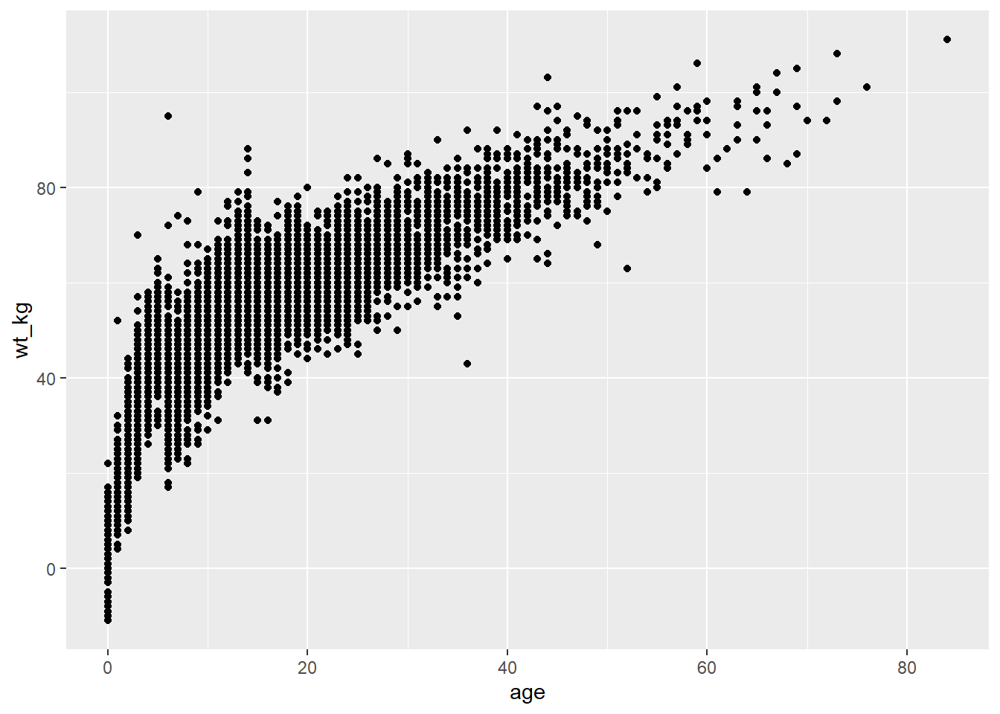
Comme autre exemple, les commandes suivantes utilisent les mêmes données, un “mappage” légèrement différent, et un “geom” différent. La fonction geom_histogram() ne nécessite qu’une colonne mappée sur l’axe des x, puisque l’axe des y est généré automatiquement (représente le comptage de chaque modalité fait automatiquement par la fonction).
ggplot(data = linelist, mapping = aes(x = age))+
geom_histogram()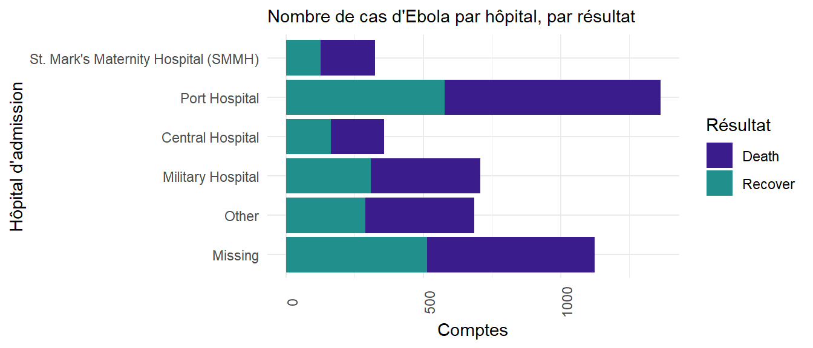
Attributs (esthétiques) du graphique
Dans le jargon de ggplot, “l’esthétique” d’un graphique a une signification assez spécifique. Il s’agit d’une propriété visuelle des données représentées. Notons que le terme “esthétique” fait ici référence aux données de variables “mappées” dans les “geoms”/formes - et non à l’affichage des éléments environnants du graphique qui ne dépendent pas des données tel que les titres, les noms des axes, la couleur de fond (qu’on pourrait associer au mot “esthétique” en français courant). Dans ggplot, ces éléments d’affichage non reliés aux données sont appelés “thèmes” et sont déterminés par une commande theme() (voir cette section).
Par conséquent, les caractéristiques esthétiques/attributs du graphique peuvent concerner les couleurs, les tailles, la transparence, le placement, etc. des données représentées. Tous les “geoms” n’auront pas les mêmes options esthétiques, mais beaucoup parmi ces options peuvent être utilisées par la plupart des “geoms”. Voici quelques exemples :
shape =Afficher un point avecgeom_point()comme un point, une étoile, un triangle, ou un carré…
fill =La couleur intérieure (par exemple d’une barre ou d’un diagramme en boîte)
color =La ligne extérieure d’une barre, d’un diagramme en boîte, etc., ou la couleur du point si on utilisegeom_point()
size =Taille (par exemple, l’épaisseur de la ligne, la taille du point)
alpha =La transparence (1 = opaque, 0 = invisible)
binwidth =La largeur des cases de l’histogramme
width =La largeur des colonnes du diagramme en barrelinetype =Le type de ligne (par exemple, solide, en pointillés …)
Il est possible d’affecter des valeurs à ces attributs de deux manières :
- Affecter une valeur fixe/statique (par exemple,
color = "blue") qui sera donc appliquée à toutes les observations représentées
- Relier l’attribut à une variable de données (par exemple,
color = hospital) de telle sorte que l’affichage de chaque observation dépende de sa valeur dans cette variable.
Affecter un attribut à une valeur fixe
Si nous souhaitions que l’attribut de l’objet graphique soit statique, c’est-à-dire qu’elle soit la même pour chaque observation des données, nous écrivons son affectation dans le “geom” mais en dehors de toute instruction mapping = aes(). Ces affectations peuvent ressembler à size = 1 ou color = "blue". Voici deux exemples :
- Dans le premier exemple, l’instruction
mapping = aes()se trouve dans la commandeggplot()et les axes sont associés aux variables d’âge et de poids dans notre jeu de données. Les attributs du graphique,color =,size =, etalpha =(pour déterminer la transparence) sont assignées à des valeurs statiques. Pour plus de clarté, ceci est fait dans la fonctiongeom_point(), car vous pouvez ajouter d’autres “geoms” par la suite qui prendraient des valeurs différentes pour leur esthétique d’affichage.
- Dans le deuxième exemple, l’histogramme ne nécessite que la mise en relation de la variable d’intérêt à l’axe des x . Les valeurs statiques de l’histogramme
binwidth =,color =,fill =(couleur de l’intérieur des barres) etalpha =sont à nouveau définies dans le “geom”.
# Diagramme de dispersion
ggplot(data = linelist, mapping = aes(x = age, y = wt_kg))+ # définir les données et le mappage des axes
geom_point(color = "darkgreen", size = 0.5, alpha = 0.2) # définir l'esthétique du point statique
# histogramme
ggplot(data = linelist, mapping = aes(x = age))+ # définir les données et les axes
geom_histogram( # afficher l'histogramme
binwidth = 7, # largeur des barres
color = "red", # couleur de la ligne de la barre
fill = "blue", # couleur intérieure de la barre
alpha = 0.1) # transparence de la barre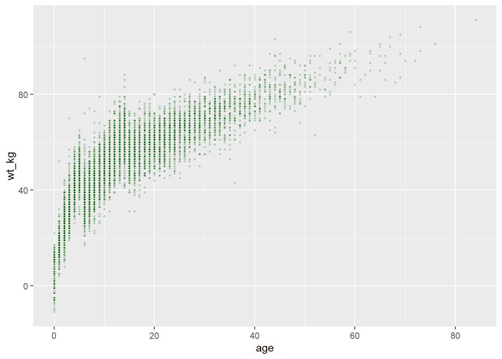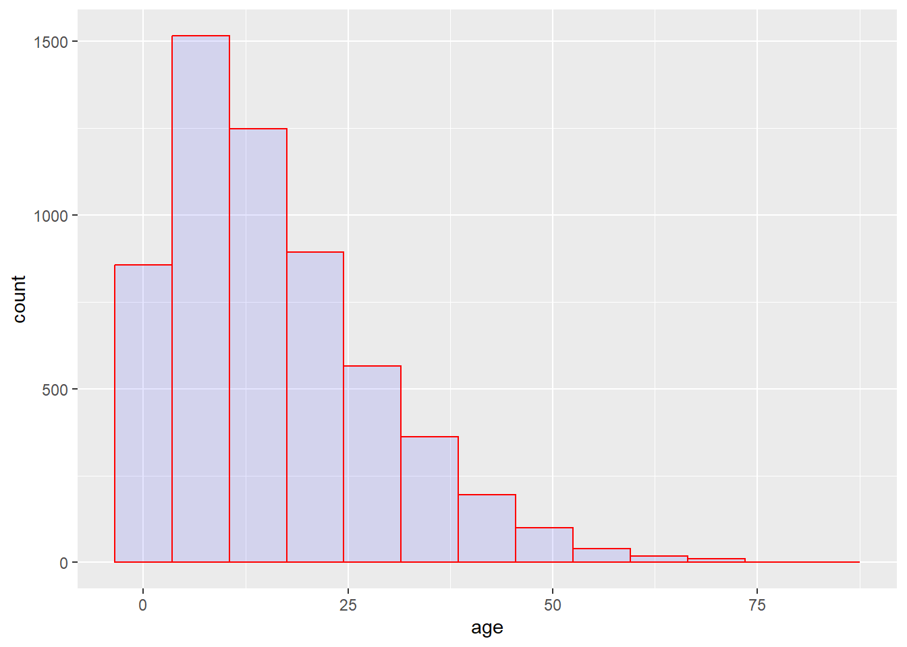
Relier un attribut aux valeurs d’une variable
L’alternative consiste à relier l’attribut de l’objet graphique aux valeurs d’une variable. Dans cette approche, l’affichage de cet attribut dépendra des valeurs prises dans cette variable. Si les valeurs de la variable sont continues, l’échelle d’affichage (légende) de cet attribut sera continue. Si les valeurs de la variable sont discrètes, la légende affichera chaque valeur et les données représentées apparaîtront comme “groupées” de manière distincte (pour en savoir plus, consultez la section groupage de cette page).
Pour ce faire, nous devons associer l’attribut du graphique à un nom de variable de notre jeu de données (sans guillemets) ie le “mapper”. Ceci doit donc être fait dans une fonction mapping = aes() (note : il y a plusieurs endroits dans le code où nous pouvons faire ces assignations (de mappage), comme discuté ci-dessous).
Deux exemples sont présentés ci-dessous.
- Dans le premier exemple, l’attribut
color =(de chaque point) est mappé à la variableage- et une échelle est apparue dans la légende ! Pour l’instant, notons simplement que l’échelle existe - nous montrerons comment la modifier dans les sections suivantes.
- Dans le deuxième exemple, deux nouveaux attributs sont également associés à des variables (
color =etsize =), tandis que les attributsshape =etalpha =sont associés à des valeurs fixes en dehors de toute fonctionmapping = aes().
# Diagramme de dispersion
ggplot(data = linelist, # définir les données
mapping = aes( # mapper l'attribut aux valeurs de la colonne
x = age, # mapper l'axe des x à la variable des âges
y = wt_kg, # mapper l'axe des y à la variable des poids
color = age) # mapper l'attribut color à la variable des âges
)+
geom_point() # afficher les données comme des points
# Diagramme de dispersion
ggplot(data = linelist, # définir les données
mapping = aes( # mapper les attributs aux variables
x = age, # mapper l'axe des x à la variable des âges
y = wt_kg, # mapper l'axe des y à la variable des poids
color = age, #mapper l'attribut color à la variable des âges
size = age))+ # mapper l'attribut size (taille des points) à la variable des âges
geom_point( # afficher les données comme des points
shape = "diamond", # preciser la forme des points comme des diamants
alpha = 0.3) # transparence des points à 30%.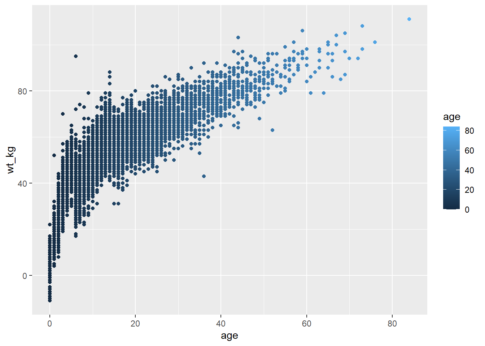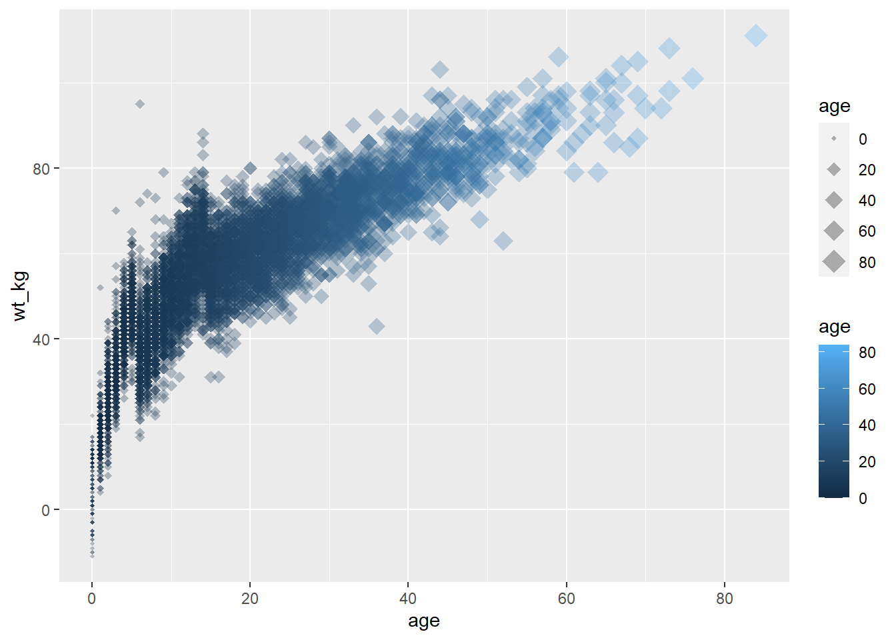
Note : Les axes sont toujours assignées à des variables dans les données (pas à des valeurs statiques), et sont donc toujours mappées dans mapping = aes().
Il devient important de garder la trace des différentes couches du graphique et les attributs lorsque vous créez des graphiques plus complexes - par exemple des graphiques avec plusieurs “geoms”. Dans l’exemple ci-dessous, l’attribut size = est assigné deux fois - une fois pour geom_point() et une fois pour geom_smooth() - et les deux fois comme une valeur statique.
ggplot(data = linelist,
mapping = aes( # mapper les attributs qux variables
x = age,
y = wt_kg,
color = age_years)
) +
geom_point( # ajouter des points pour chaque ligne de données
size = 1,
alpha = 0.5) +
geom_smooth( # ajouter une courbe de tendance
method = "lm", # avec une méthode linéaire
size = 2) # taille (largeur de la ligne) de 2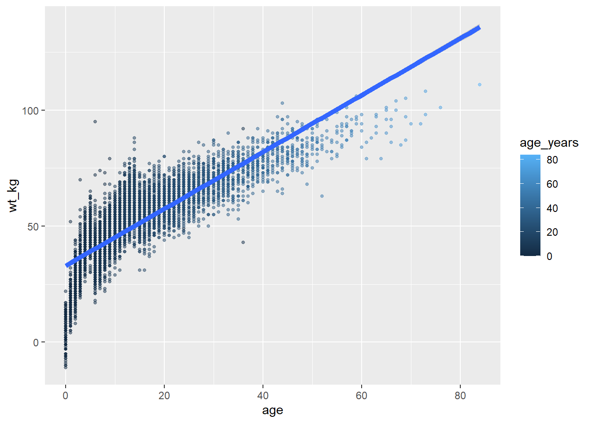
Comment et quand faire le mappage
Le mappage dans mapping = aes() peut être écrit à plusieurs endroits dans les commandes du ggplot et peut même être écrit plus d’une fois. Cela peut être écrit dans la commande supérieure ggplot(), et/ou pour chaque “geom” individuel en dessous. Les possibilités comprennent :
- Les affectations de mappage effectuées dans la commande supérieure
ggplot()et qui seront héritées par défaut dans tous les “geom” inférieurs, comme c’est le cas pourx =ety =ci-dessous. - Les affectations de mappage effectuées dans un “geom” et qui ne s’appliquent qu’à ce “geom”.
De même, l’argument data = spécifié dans la commande supérieure ggplot() s’appliquera par défaut à tous les “geom” inférieurs. Toutefois on peut aussi spécifier des jeux de données différents pour chaque “geom” (mais c’est plus complexe).
Ainsi, chacune des 3 commandes suivantes (avec des mappages faits à différents niveaux du code) créera le même graphique :
# Ces commandes produiront exactement le même graphique.
ggplot(data = linelist, mapping = aes(x = age))+
geom_histogram()
ggplot(data = linelist)+
geom_histogram(mapping = aes(x = age))
ggplot()+
geom_histogram(data = linelist, mapping = aes(x = age))Groupage
On peut facilement regrouper les données et les “représenter par groupe”. En fait, nous l’avons déjà fait !
Pour cela nous allons assigner la colonne de “regroupement” à l’attribut approprié du graphique, dans un mapping = aes(). Ci-dessus, nous avons fait une démonstration en utilisant des valeurs continues lorsque nous avons assigné l’attributsize = à la variable age. Cependant, cela fonctionne de la même manière pour les colonnes discrètes/catégorielles.
Par exemple, si nous voulons que les points soient affichés par sexe, nous pouvons définir mapping = aes(color = gender). Une légende apparaît automatiquement. Cette affectation peut être faite dans le mapping = aes() de la commande supérieure ggplot() (et elle va être héritée par le “geom”), ou elle peut être définie dans un mapping = aes() séparé dans le “geom”. Les deux approches sont présentées ci-dessous :
ggplot(data = linelist,
mapping = aes(x = age, y = wt_kg, color = gender))+
geom_point(alpha = 0.5)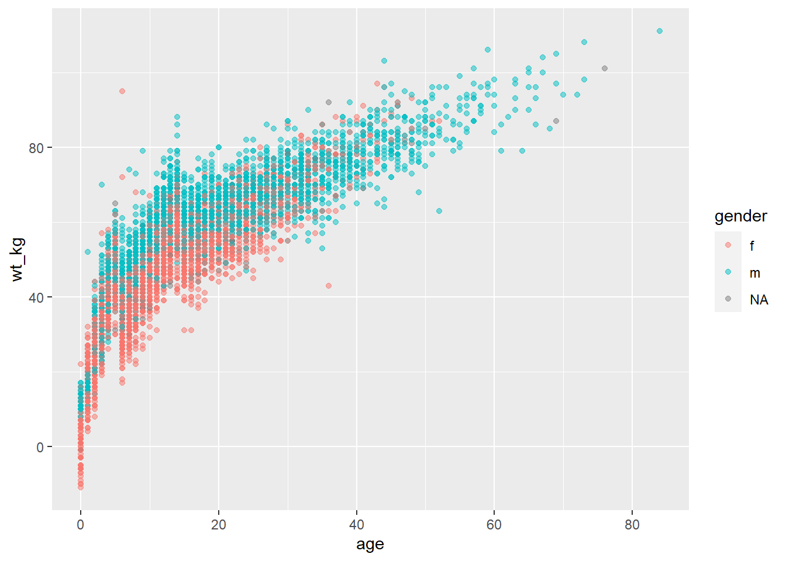
# Cette autre version de code produit le même graphique
ggplot(data = linelist,
mapping = aes(x = age, y = wt_kg))+
geom_point(
mapping = aes(color = gender),
alpha = 0.5)Notez que selon le “geom”, vous devrez utiliser différents arguments pour regrouper les données. Pour geom_point(), vous utiliserez probablement color =, shape = ou size =. Alors que pour geom_bar(), vous utiliseriez plus probablement fill =. Cela dépend simplement du “geom” et de l’attribut du graphique que vous voulez utiliser pour refléter les groupages.
Pour votre information - la manière la plus basique d’regrouper les données est d’utiliser seulement l’argument group = dans mapping = aes(). Cependant, cela ne changera pas les couleurs, le remplissage ou les formes. Elle ne créera pas non plus de légende. Pourtant, les données sont groupées, donc les affichages statistiques des données peuvent être affectés.
Pour ajuster l’ordre des groupes dans un graphique, consultez la page Trucs et Astuces avec ggplot ou la page sur les Facteurs. Vous trouverez de nombreux exemples de graphiques groupés dans les sections ci-dessous sur la représentation des données continues et catégorielles.
29.6 Facets / Petits-multiples
Les “facets”, ou “petits-multiples”, sont utilisés pour séparer un graphique en une figure à plusieurs sections selon les valeurs d’une ou plusieurs variables qualitatives. Le même type de graphique est ainsi créé plusieurs fois, chaque (sous-)graphique utilisant un sous-groupe du même ensemble de données.
Le “faceting” est une fonctionnalité fournie avec ggplot2, de sorte que les légendes et les axes de chaque graphe d’un sous-groupe du jeu de données (“facet”) sont automatiquement alignés. Il existe d’autres paquets (“packages”) discutés dans la page Trucs et Astuces avec ggplot qui sont utilisés pour combiner des graphiques complètement différents (i.e. qui cette fois ne sont pas les mêmes graphiques répétés pour chaque sous-groupe d’un même jeu de données) en une seule figure. On peut citer cowplot et patchwork.
Le “faceting” est effectué avec l’une des fonctions ggplot2 suivantes :
facet_wrap()Pour montrer un graphique différent pour chaque niveau d’une seule variable. Un exemple de ceci pourrait être de montrer une courbe d’épidémie différente pour chaque hôpital dans une région. Les “facets” sont ordonnées par ordre alphabétique, sauf si la variable est un facteur avec un autre ordre défini.
- On peut utiliser certaines options pour déterminer la disposition des “facets”, par exemple
nrow = 1ouncol = 1pour contrôler le nombre de lignes ou de colonnes dans lesquelles les “facets” sont disposés.
facet_grid()Cette fonction est utilisée lorsque nous souhaitons introduire une seconde variable dans l’arrangement des “facets”. Ici, chaque graphe d’une grille montre l’intersection entre les valeurs de deux variables. Par exemple, des courbes épidémiques pour chaque combinaison hôpital-groupe d’âge avec les hôpitaux en haut (colonnes) et les groupes d’âge sur les côtés (lignes).
- Dans ce cas-ci
nrowetncolne sont pas pertinents, car les sous-groupes sont présentés dans une grille.
Chacune de ces fonctions accepte une syntaxe de formule pour spécifier la ou les variables à utiliser pour le “faceting” Les deux acceptent jusqu’à deux variables, une de chaque côté d’un tilde ~.
Pour
facet_wrap(), on écrira le plus souvent le nom d’une seule variable précédée d’un tilde~commefacet_wrap(~hospital). Cependant on peut préciser deux noms de variables si c’est que l’on veut représenterfacet_wrap(outcome ~hospital)- chaque combinaison unique s’affichera dans un graphique séparé, mais ils ne seront pas disposés dans une grille. Si on décide de ne fournir qu’une seule variable à la fonction, un point.est utilisé comme bouche-trou de l’autre côté de la formule - voir les exemples de code.Pour
facet_grid()nous pouvons également spécifier une ou deux variables à la formule (facet_grid( rows ~ columns)). Si on ne veut en spécifier qu’une, on peut placer un point.de l’un ou l’autre côté du tilde commefacet_grid(. ~ hospital)oufacet_grid(hospital ~ .).
Les “facets” peuvent rapidement contenir une quantité écrasante d’informations - il est important de s’assurer que nous n’avons pas trop de modalités pour chaque variable qualitative que nous choisissons de “facetter”. Voici quelques exemples rapides avec le jeu de données sur le paludisme (voir Télécharger le manuel et les données) qui contient les données sur le nombre de cas de paludisme quotidiens pour différentes structures de santé par groupe d’âge.
Ci-dessous, nous importons ces données et effectuons quelques modifications rapides pour plus de simplicité :
# Ces donnees sont le nombre de cas de palu par jour par structure
malaria_data <- import(here("data", "malaria_facility_count_data.rds")) %>% # importer
select(-submitted_date, -Province, -newid) # enlever les colonnes (variables) dont on n'a pas besoin pour les prochaines étapesLes 50 premières lignes des données sur le paludisme sont affichées ci-dessous. Notez qu’il y a une colonne malaria_tot, mais aussi des colonnes pour le nombre de cas par groupe d’âge (celles-ci seront utilisées dans le second exemple facet_grid()).
facet_wrap()
Pour le moment, concentrons-nous sur les variables malaria_tot et District. Ignorons pour l’instant les colonnes du nombre de cas par âge. Nous allons tracer des courbes épidémiques avec geom_col(), qui produit une colonne pour chaque jour à la hauteur spécifiée sur l’axe des y fournie par la variable malaria_tot (les données sont déjà des nombres de cas quotidiens, donc nous utilisons geom_col() - voir la section “Diagramme en barres” ci-dessous).
Lorsque nous ajoutons la commande facet_wrap(), nous spécifions un tilde (~) et ensuite la variable à utiliser pour le “facet” (District dans ce cas). On peut placer une autre variable sur le côté gauche du tilde, - cela créera un “facet” pour chaque combinaison - mais nous recommandons de le faire avec facet_grid() à la place. Dans ce cas d’utilisation, un “facet” est créé pour chaque valeur unique de District.
# Un graphique avec des facets par district
ggplot(malaria_data, aes(x = data_date, y = malaria_tot)) +
geom_col(width = 1, fill = "darkred") + # tracer le nombre de cas sous forme de colonnes
theme_minimal()+ # simplifier les arrière-plans
labs( # ajouter les noms d'axes, titres ...
x = "Date of report",
y = "Malaria cases",
title = "Malaria cases by district") +
facet_wrap(~District) # les facets sont créés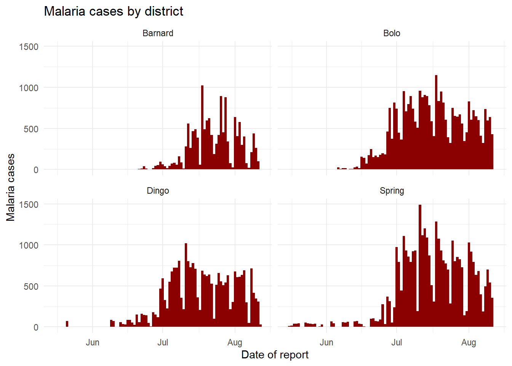
facet_grid()
Nous pouvons utiliser une approche facet_grid() pour croiser deux variables. Disons que nous voulons croiser District et la variable âge. Eh bien, nous devons faire quelques transformations de données sur les colonnes d’âge pour obtenir ces données dans le format “long” préféré de ggplot. Les groupes d’âge ont tous leurs propres colonnes - nous les voulons dans une seule colonne appelée age_group et une autre appelée num_cases. Voir la page sur Pivoter les données pour plus d’informations sur ce processus.
malaria_age <- malaria_data %>%
select(-malaria_tot) %>%
pivot_longer(
cols = c(starts_with("malaria_rdt_")), # choisir la variable à mettre en format "long"
names_to = "age_group", # la nouvelle variable avec tous les groupes d'âge est nommée age_group
values_to = "num_cases" # les valeurs dans les anciennes colonnes séparées sont regroupées dans une nouvelle unique colonne appelée num_cases
) %>%
mutate(
age_group = str_replace(age_group, "malaria_rdt_", ""),
age_group = forcats::fct_relevel(age_group, "5-14", after = 1))Les 50 premières lignes des données transformées ressemblent désormais comme suit :
Lorsque vous passez les deux variables à facet_grid(), le plus simple est d’utiliser la notation de formule (par exemple x ~ y) où x représente les lignes et y les colonnes. Voici le graphique, utilisant facet_grid() pour montrer les graphiques pour chaque combinaison des colonnes age_group et District.
ggplot(malaria_age, aes(x = data_date, y = num_cases)) +
geom_col(fill = "darkred", width = 1) +
theme_minimal()+
labs(
x = "Date of report",
y = "Malaria cases",
title = "Malaria cases by district and age group"
) +
facet_grid(District ~ age_group)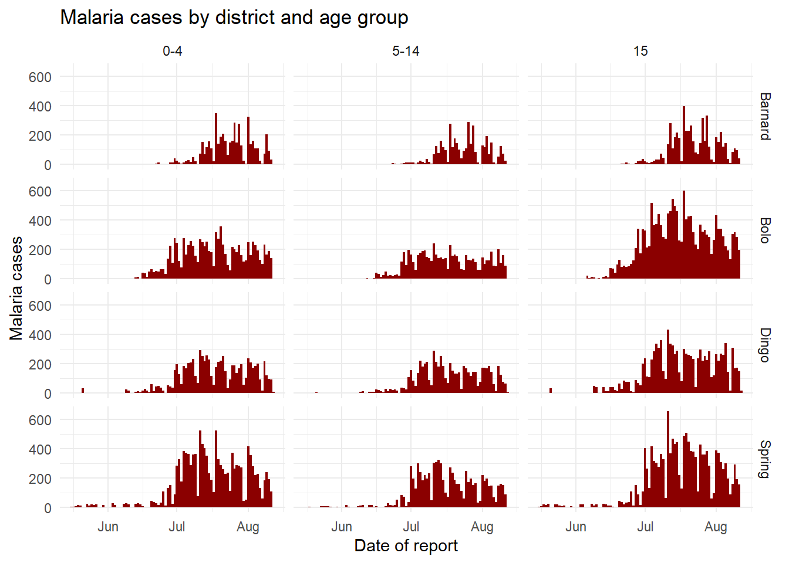
Axes libres ou fixes
Les échelles des axes affichées lors du “faceting” sont par défaut les mêmes (fixes) pour tous les “facets”. C’est utile pour les comparaisons croisées, mais pas toujours approprié.
Lorsque l’on utilise facet_wrap() ou facet_grid(), on peut ajouter scales = "free_y" pour “libérer” ou rendre indépendant les axes y des “facets” afin qu’ils soient représentés à l’échelle de leur sous-ensemble de données spécifique. Ceci est particulièrement utile si les nombres sont faibles pour une des sous-catégories et que les tendances sont difficiles à voir en laissant l’échelle pareille pour tous les “facets”. Au lieu de “free_y”, on peut aussi écrire “free_x” pour faire la même chose pour l’axe des x (par exemple pour les dates) ou pour faire court “free” pour les deux axes. Notez que dans facet_grid, les échelles y seront les mêmes pour les “facets” de la même ligne, et les échelles x seront les mêmes pour les “facets” de la même colonne.
En utilisant uniquement facet_grid, on peut ajouter space = "free_y" ou space = "free_x" pour que la hauteur ou la largeur réelle de la “facets” soit pondérée par les valeurs de la figure à l’intérieur. Cela ne fonctionne que si scales = "free" (y ou x) est déjà appliqué.
# Axe des y libre
ggplot(malaria_data, aes(x = data_date, y = malaria_tot)) +
geom_col(width = 1, fill = "darkred") + # tracer le nombre de cas sous forme de colonnes
theme_minimal()+ # simplifier les arrière-plans
labs( # ajouter les noms d'axes, titres ...
x = "Date of report",
y = "Malaria cases",
title = "Malaria cases by district - 'free' x and y axes") +
facet_wrap(~District, scales = "free") # les facets sont créés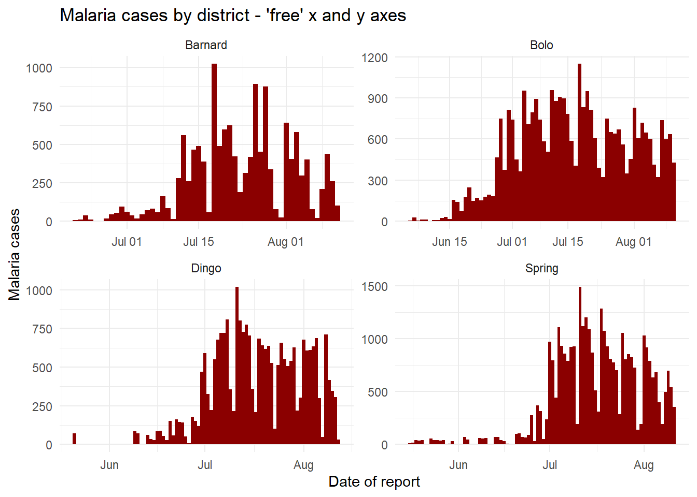
Réorganiser l’affichage des “facets”
Voir ce post sur la façon de réorganiser les modalités/niveaux des variables facteurs dans les “facets”.
29.7 Stocker les graphiques produits
Sauvegarder les graphiques dans l’environnement
Par défaut, lorsque nous exécutons une commande ggplot(), le graphique sera affiché dans l’onglet “Plots” de RStudio. Cependant, nous pouvons également enregistrer le celui-ci en tant qu’objet en utilisant l’opérateur d’affectation <- et en lui donnant un nom. Il ne s’affichera alors que si le nom de l’objet lui-même est exécuté. On peut également l’afficher en faisant appel à la fonction R base print(), mais cela n’est nécessaire que dans certaines circonstances, par exemple si le graphique est créé à l’intérieur d’une boucle for utilisée pour afficher plusieurs graphiques à la fois (voir la page Itération, boucles et listes).
# definir le graphique
age_by_wt <- ggplot(data = linelist, mapping = aes(x = age_years, y = wt_kg, color = age_years))+
geom_point(alpha = 0.1)
# l'afficher
age_by_wt 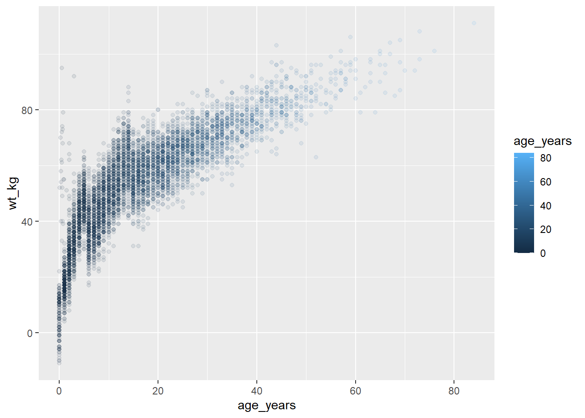
Modifier des graphiques de l’environnement
Une des particularités de ggplot2 est que nous pouvons définir un graphiquee (comme ci-dessus), puis lui ajouter des couches en commençant par son nom. Nous n’avons pas besoin de répéter toutes les commandes qui ont créé le graphique original !
Par exemple, pour modifier le graphe age_by_wt qui a été défini ci-dessus, pour inclure une ligne verticale à l’âge de 50 ans, il suffit d’ajouter un + et de commencer à ajouter des couches supplémentaires au graphe.
age_by_wt+
geom_vline(xintercept = 50)Exporter les graphiques
L’exportation de ggplots est facilitée par la fonction ggsave() de ggplot2. Elle peut fonctionner de deux façons :
- Spécifier le nom de l’objet graphique, puis le chemin d’accès au fichier et le nom du fichier avec l’extension.
- Par exemple :
ggsave(my_plot, here("plots", "my_plot.png"))
- Par exemple :
- Exécutez la commande avec seulement un chemin d’accès au fichier, pour sauvegarder le dernier graphique qui a été imprimé.
- Par exemple :
ggsave(here("plots", "my_plot.png")).
- Par exemple :
Vous pouvez exporter en png, pdf, jpeg, tiff, bmp, svg, ou plusieurs autres types de fichiers, en spécifiant l’extension du fichier dans le chemin d’accès au fichier.
Vous pouvez également spécifier les arguments width = (largeur), height = (hauteur), et units = (unités) (soit “in”, “cm”, ou “mm”). Vous pouvez également spécifier dpi = avec un nombre pour la résolution du graphe (par exemple 300). Consultez les détails de la fonction en entrant ?ggsave ou en lisant la documentation en ligne.
Rappelez-vous que vous pouvez utiliser la syntaxe here() pour fournir le chemin d’accès au fichier souhaité. Voir la page Importation et exportation pour plus d’informations.
29.8 Etiquettes du graphe
Vous voudrez certainement ajouter ou ajuster les étiquettes du graphique. Ceci est le plus facile à faire avec la fonction labs() qui est ajoutée au graphe avec + tout comme les “geoms” l’ont été.
Dans labs(), vous pouvez fournir des chaînes de caractères à ces arguments :
x =ety =Le titre de l’axe des x et de l’axe des y (étiquettes des axes)
title =Le titre du graphique principal
subtitle =Le sous-titre du graphique, en plus petit texte sous le titre
caption =La note de bas de graphe du graphique, en bas à droite par défaut.
Voici un graphique que nous avons fait plus tôt, mais avec des étiquettes plus jolies :
age_by_wt <- ggplot(
data = linelist, # preciser le jeu de donnees
mapping = aes( # mapper les attributs aux valeurs des variables
x = age, # mapper l'axe des x à l'âge
y = wt_kg, # mapper l'axe des y au poids (weight)
color = age))+ # mapper la couleur à l'âge
geom_point()+ # afficher les données comme des points
labs(
title = "Age and weight distribution",
subtitle = "Fictional Ebola outbreak, 2014",
x = "Age in years",
y = "Weight in kilos",
color = "Age",
caption = stringr::str_glue("Data as of {max(linelist$date_hospitalisation, na.rm=T)}"))
age_by_wt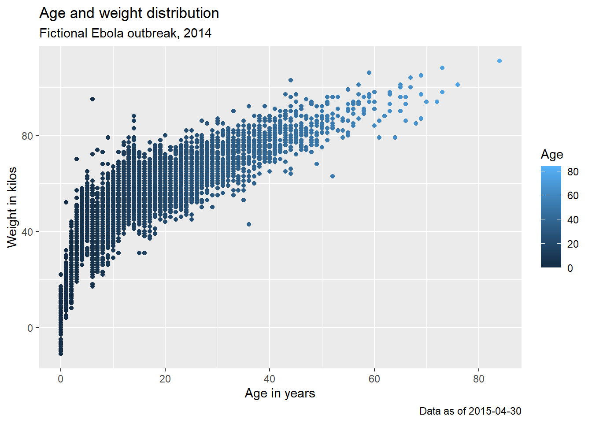
ASTUCE: Remarquez comment, dans l’affectation de la note de bas de graphe, nous avons utilisé str_glue() du package stringr pour implanter du code R dynamique dans le texte de la chaîne de caractères. La légende affichera la date “Data as of :” qui reflète la date d’hospitalisation maximale dans la liste linéaire utilisée pour dessiner le graphe. Pour en savoir plus, consultez la page Caractères et chaînes de caractères.
NOTE: Une remarque sur la spécification du titre de la légende : Il n’y a pas un unique argument “titre de légende”, car on peut avoir plusieurs échelles dans votre légende. Dans labs(), on peut écrire l’argument pour l’attribut graphique utilisé pour créer la légende, et fournir le titre de cette façon. Par exemple, ci-dessus, nous avons assigné color = age pour créer la légende. Par conséquent, nous fournissons color = à labs() et nous attribuons le titre de légende souhaité (“Age” avec un A majuscule). Si on crée la légende avec aes(fill = COLUMN), alors dans labs() on écrira fill = pour ajuster le titre de cette légende. La section sur les échelles de couleurs dans la page ggplot tips fournit plus de détails sur l’édition des légendes, et une approche alternative utilisant les fonctions scales_().
29.9 Thèmes
Une des meilleures parties de ggplot2 est le large contrôle que nous pouvons avoir sur le graphique - nous pouvons définir n’importe quoi ! Comme mentionné plus haut, les éléments du graphique qui ne sont pas reliés aux données sont ajustés par la fonction theme(). Par exemple, la couleur de fond du graphique, la présence/absence de lignes de grille, et la police/taille/couleur/alignement du texte (titres, sous-titres, légendes, texte des axes…). Ces ajustements peuvent être effectués de deux manières :
- Utiliser une fonction thème toute faite
theme_()pour faire des ajustements généraux - ceux-ci incluenttheme_classic(),theme_minimal(),theme_dark(),theme_light(),theme_grey(),theme_bw()entre autres.
- Ajustez chaque petit aspect du graphique individuellement dans
theme().
Fonctions thème toute faites
Comme elles sont assez simples, nous allons démontrer l’utilisation des fonctions thème prêtes à l’utilisation ci-dessous et ne les décrirons pas davantage ici.
NOTE: Notez que tout micro-ajustement supplémentaire avec theme() doit être fait après l’utilisation d’une fonction thème toute faite (sinon les ajustements ne seront pas pris en compte).
Ecrivez-les avec des parenthèses vides.
ggplot(data = linelist, mapping = aes(x = age, y = wt_kg))+
geom_point(color = "darkgreen", size = 0.5, alpha = 0.2)+
labs(title = "Theme classic")+
theme_classic()
ggplot(data = linelist, mapping = aes(x = age, y = wt_kg))+
geom_point(color = "darkgreen", size = 0.5, alpha = 0.2)+
labs(title = "Theme bw")+
theme_bw()
ggplot(data = linelist, mapping = aes(x = age, y = wt_kg))+
geom_point(color = "darkgreen", size = 0.5, alpha = 0.2)+
labs(title = "Theme minimal")+
theme_minimal()
ggplot(data = linelist, mapping = aes(x = age, y = wt_kg))+
geom_point(color = "darkgreen", size = 0.5, alpha = 0.2)+
labs(title = "Theme gray")+
theme_gray()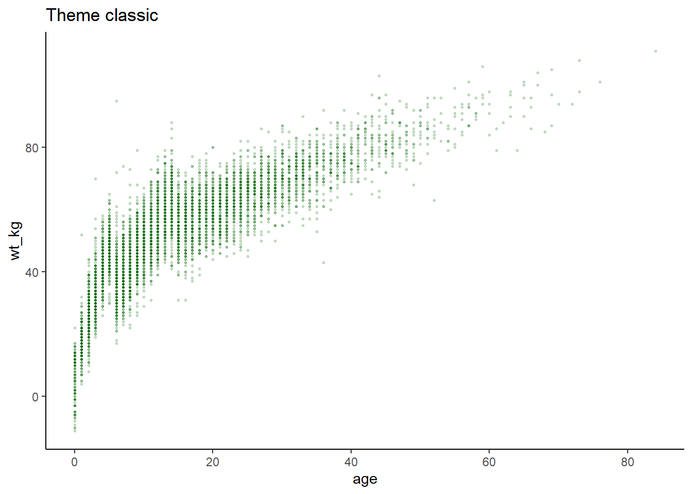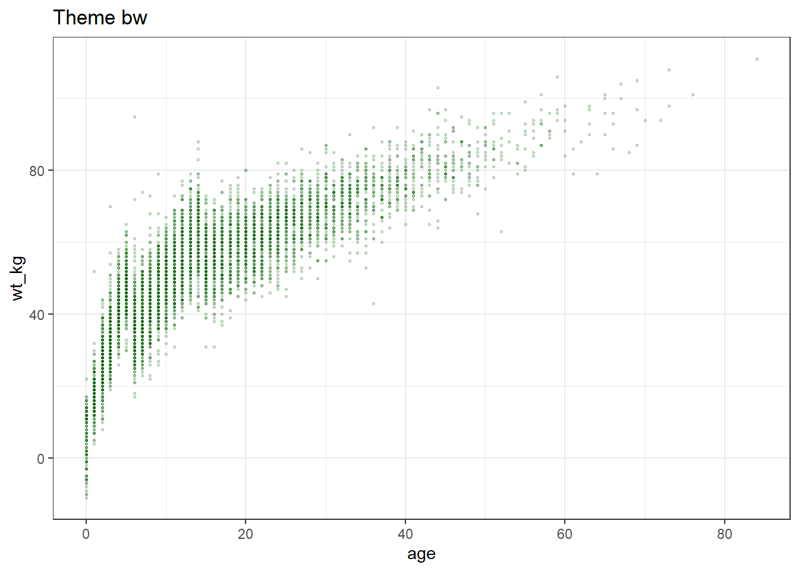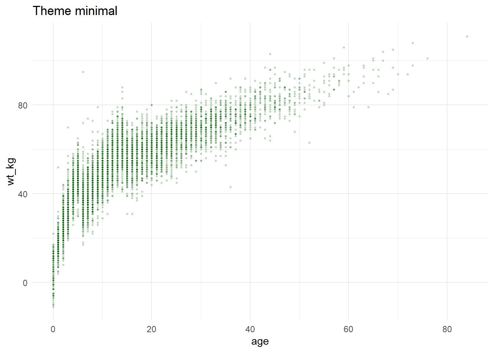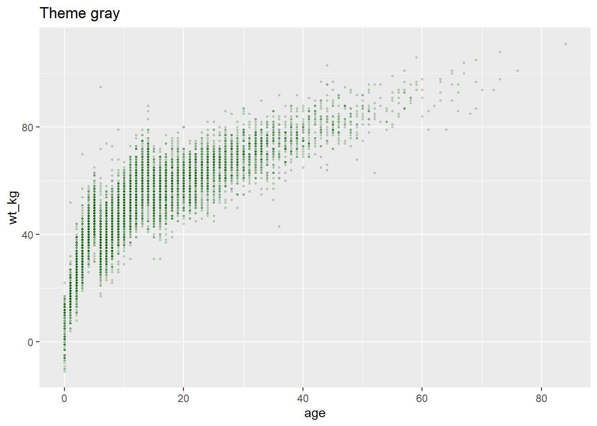
Modifier le thème
La fonction theme() peut prendre un grand nombre d’arguments, dont chacun modifie un aspect très spécifique du graphique. Il n’est pas possible de couvrir tous les arguments, mais nous allons décrire le modèle général pour leur utilisation et vous montrer comment trouver le nom de l’argument dont vous avez besoin. La syntaxe de base est la suivante :
- Dans
theme()écrivez le nom de l’argument pour l’élément du graphique que vous voulez modifier, commeplot.title =
- Fournissez une fonction
element_()à l’argument
- Le plus souvent, utilisez
element_text(), mais d’autres incluentelement_rect()pour les couleurs d’arrière-plan du canevas, ouelement_blank()pour supprimer les éléments du graphique
- A l’intérieur de la fonction
element_(), écrivez des affectations d’arguments pour faire les ajustements fins que vous désirez.
Cette description était assez abstraite, voici donc quelques exemples.
Le graphique ci-dessous a l’air assez stupide, mais il sert à vous montrer une variété de façons dont vous pouvez ajuster vos graphes.
- Nous commençons avec le graphique
age_by_wtdéfini juste au-dessus et ajoutonstheme_classic().
- Pour des ajustements plus fins, on ajoute
theme()et on inclut un argument pour chaque élément du graphe à ajuster.
Il peut être intéressant d’organiser les arguments en sections logiques. Pour décrire quelques-uns de ceux utilisés ci-dessous :
legend.position =est unique en ce qu’il accepte des valeurs simples comme “bottom”, “top”, “left” et “right”. Mais en général, les arguments liés au texte nécessitent que vous placiez les détails danselement_text().
- La taille du titre avec
element_text(size = 30)
- L’alignement horizontal de la note de bas de graphe avec
element_text(hjust = 0)(de droite à gauche)
- Le sous-titre est en italique avec
element_text(face = "italic")
age_by_wt +
theme_classic()+ # pre-definir les ajustements avec un theme tout-prêt
theme(
legend.position = "bottom", # déplacer la legende en dessous
plot.title = element_text(size = 30), # taille du titre à 30
plot.caption = element_text(hjust = 0), # note de bas de graphe alignée à gauche
plot.subtitle = element_text(face = "italic"), # sous-titre en italique
axis.text.x = element_text(color = "red", size = 15, angle = 90), # ajustement pour le texte sur l'axe des x uniquement
axis.text.y = element_text(size = 15), # ajustement pour le texte sur l'axe des y uniquement
axis.title = element_text(size = 20) # ajustement pour les titres des deux axes
) 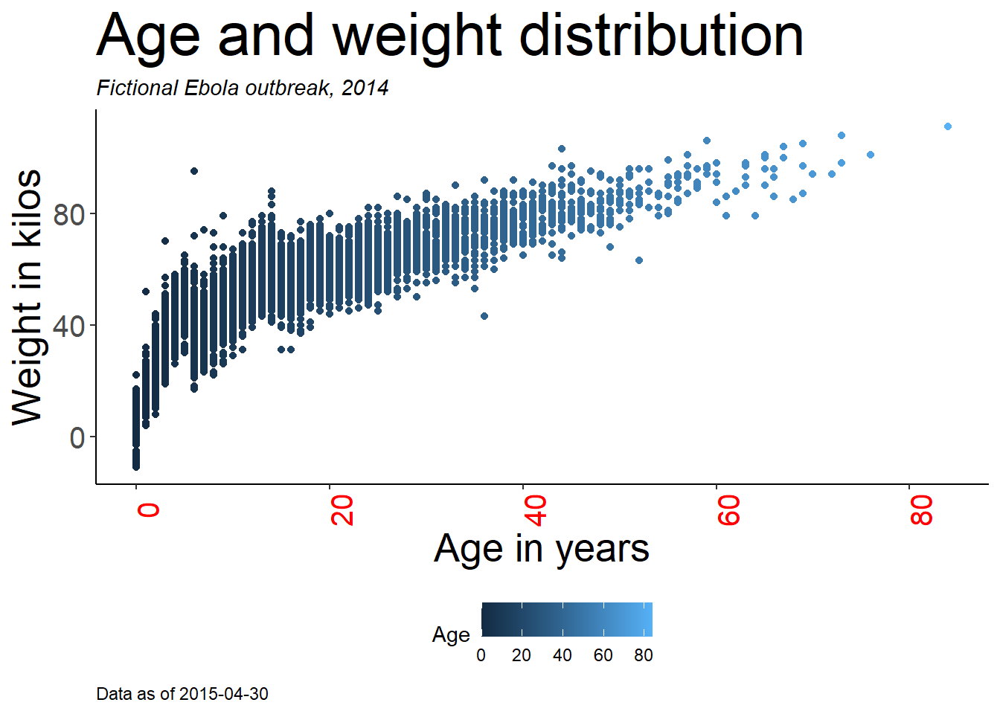
Voici quelques arguments theme() particulièrement courants. Vous reconnaîtrez certains motifs, comme l’ajout de .x ou .y pour appliquer le changement seulement à un axe.
theme() argument |
Ce qu’il ajuste |
|---|---|
plot.title = element_text() |
Le titre |
plot.subtitle = element_text() |
Le sous-titre |
plot.caption = element_text() |
La note de bas de graphe (family, face, color, size, angle, vjust, hjust…) |
axis.title = element_text() |
Titre des axes (both x and y) (size, face, angle, color…) |
axis.title.x = element_text() |
Titre des axes: axe des x uniquement (utiliser .y pour axe des y uniquement) |
axis.text = element_text() |
Texte sur les axes (pour les deux axes) |
axis.text.x = element_text() |
Texte sur les axes: axe des x uniquement (utiliser .y pour axe des y uniquement) |
axis.ticks = element_blank() |
Supprimer les coches des axes |
axis.line = element_line() |
Lignes des axes (color, size, linetype: solid dashed dotted etc) |
strip.text = element_text() |
Texte de bande des “facet” (colour, face, size, angle…) |
strip.background = element_rect() |
Bande des “facet” (fill, colour, size…) |
Vous vous dîtes surement “Mais il y a tellement d’arguments pour les thémes! Comment pourrais-je me les rappeler tous ?”. Ne vous inquiétez pas - il est impossible de se souvenir de tous. Heureusement, il existe quelques outils pour vous aider :
La documentation tidyverse sur modifier le thème, qui contient une liste complète.
TIP: Exécutez la commande theme_get() de ggplot2 pour imprimer une liste de tous les >90 arguments de theme() sur la console.
TIP: Si jamais vous voulez supprimer un élément d’un graphe, vous pouvez aussi le faire via theme(). Passez simplement element_blank() en argument pour le faire disparaître complètement. Pour les légendes, préciser legend.position = "none".
29.10 Couleurs
Veuillez consulter cette section sur les échelles de couleurs de la page “Trucs et Astuces dans ggplot”.
29.11 Utiliser le “pipe” avec ggplot2
Lorsque vous utilisez des “pipes” pour nettoyer et transformer vos données, il est facile de passer les données transformées dans ggplot().
Les “pipes” (qui passent le jeu de données d’une fonction à l’autre) laisseront place aux + une fois que la fonction ggplot() sera appelée. Notez que dans ce cas, il n’est pas nécessaire de spécifier l’argument data =, car il est automatiquement défini comme le jeu de données passé dans le pipe.
Voici à quoi cela peut ressembler :
linelist %>% # commencer avec la liste lineaire
select(c(case_id, fever, chills, cough, aches, vomit)) %>% # selectionner les variables qui nous interessent
pivot_longer( # pivoter en format long
cols = -case_id,
names_to = "symptom_name",
values_to = "symptom_is_present") %>%
mutate( # remplacer les valeurs manquantes
symptom_is_present = replace_na(symptom_is_present, "unknown")) %>%
ggplot( # commencer le ggplot!
mapping = aes(x = symptom_name, fill = symptom_is_present))+ # remarquez qu'ici on passe aux +
geom_bar(position = "fill", col = "black") +
theme_classic() +
labs(
x = "Symptom",
y = "Symptom status (proportion)"
)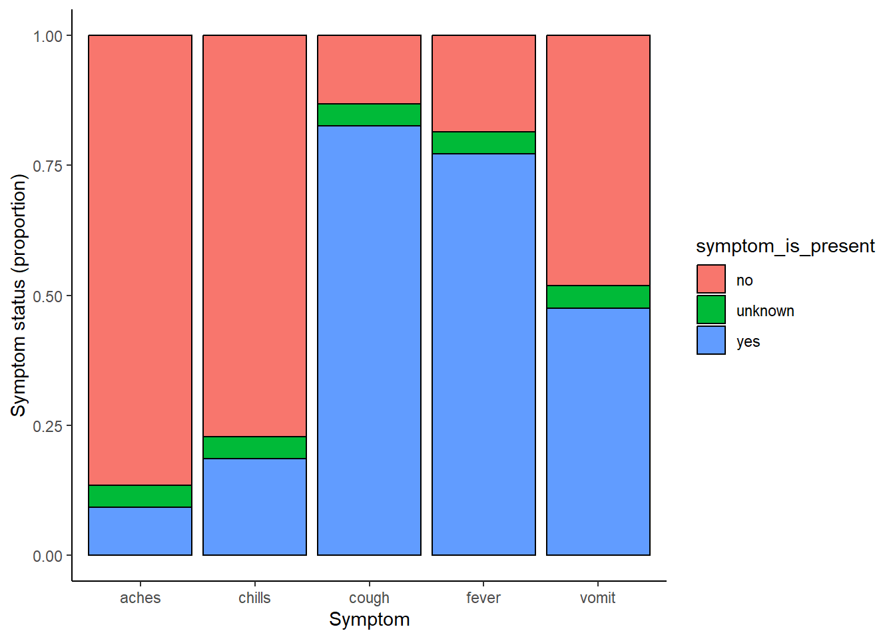
29.12 Représenter des données continues
Tout au long de cette page, vous avez déjà vu de nombreux exemples de représentation de données continues. Nous les consolidons ici brièvement et présentons quelques variantes.
Les visualisations couvertes ici incluent :
- Les graphiques pour une variable continue :
- Histogramme, un graphique classique pour présenter la distribution d’une variable continue.
Diagramme en boîte (également appelé boîte à moustaches), pour montrer les 25ème, 50ème et 75ème percentiles, les extrémités de la distribution et les valeurs aberrantes (limitations importantes).
Graphique de gigue, pour montrer toutes les valeurs sous forme de points qui sont “gigueux” afin qu’ils puissent (presque) tous être vus, même si deux d’entre eux ont la même valeur.
Graphiques en violon, montre la distribution d’une variable continue basée sur la largeur symétrique du “violon”. Sina plot, est une combinaison du graphique de gigue et du graphique de violin, où les points individuels sont montrés mais dans la forme symétrique de la distribution (via le “package” ggforce).
Nuage de points pour deux variables continues.
Heatmaps pour trois variables continues (lien vers la page Heat plots).
- Histogramme, un graphique classique pour présenter la distribution d’une variable continue.
Diagramme en boîte (également appelé boîte à moustaches), pour montrer les 25ème, 50ème et 75ème percentiles, les extrémités de la distribution et les valeurs aberrantes (limitations importantes).
Histogrammes
Les histogrammes peuvent ressembler à des diagrammes en barres, mais ils sont distincts car ils mesurent la distribution d’une variable continue. Il n’y a pas d’espace entre les “barres”, et une seule colonne est fournie à geom_histogram().
Le code ci-dessous permet de générer des histogrammes, qui regroupent les données continues en gammes et les affichent dans des barres adjacentes de hauteur variable. Ceci est fait en utilisant geom_histogram(). Voir la section “Diagrammes en barres” de la page ggplot basics pour comprendre la différence entre geom_histogram(), geom_bar(), et geom_col().
Nous allons montrer la distribution des âges des cas. Dans mapping = aes(), nous spécifierons la colonne dont nous voulons voir la distribution. On peut affecter cette colonne à l’axe des x ou des y.
Les lignes seront assignées à des “bins” basés sur leur âge numérique, et ces “bins” seront représentés graphiquement par des barres. Si vous spécifiez un nombre de “bins” avec l’attribut graphique bins =, les points de rupture sont espacés de manière égale entre les valeurs minimum et maximum de l’histogramme. Si bins = n’est pas spécifié, un nombre approprié de bins sera deviné et ce message sera affiché après le tracé :
## `stat_bin()` using `bins = 30`. Pick better value with `binwidth`.Si vous ne voulez pas spécifier un nombre de “bins” à bins =, vous pouvez alternativement spécifier binwidth = dans les unités de l’axe. Nous donnons quelques exemples montrant différents bins et largeurs de bins :
# A) Histogramme tracé par défaut
ggplot(data = linelist, aes(x = age))+ # provide x variable
geom_histogram()+
labs(title = "A) Default histogram (30 bins)")
# B) Plus de bins
ggplot(data = linelist, aes(x = age))+ # mapper la variable age à l'axe des x
geom_histogram(bins = 50)+
labs(title = "B) Set to 50 bins")
# C) Moins de bins
ggplot(data = linelist, aes(x = age))+ # mapper la variable age à l'axe des x
geom_histogram(bins = 5)+
labs(title = "C) Set to 5 bins")
# D) Plus de bins
ggplot(data = linelist, aes(x = age))+ # mapper la variable age à l'axe des x
geom_histogram(binwidth = 1)+
labs(title = "D) binwidth of 1")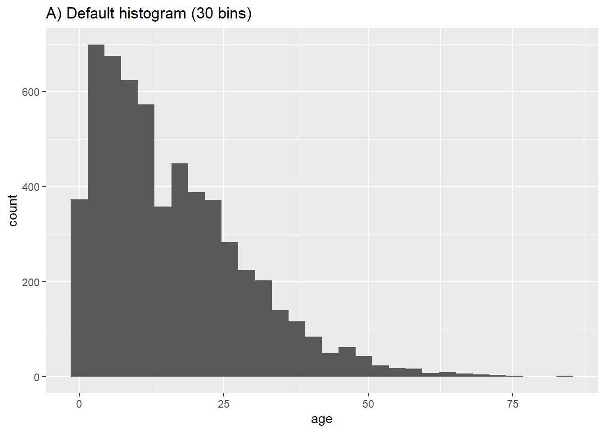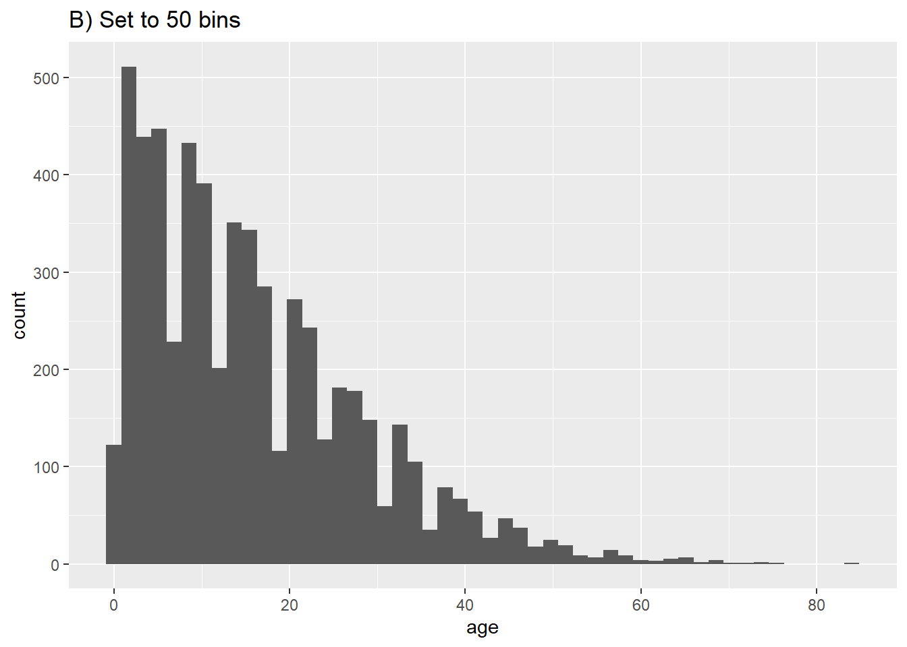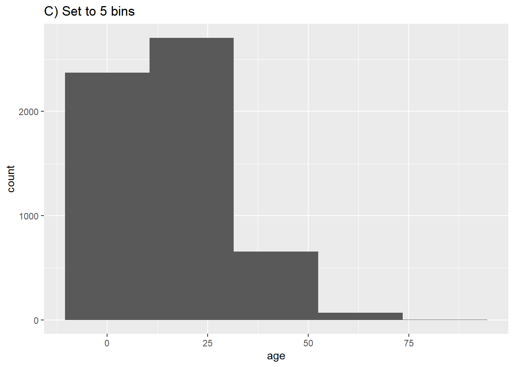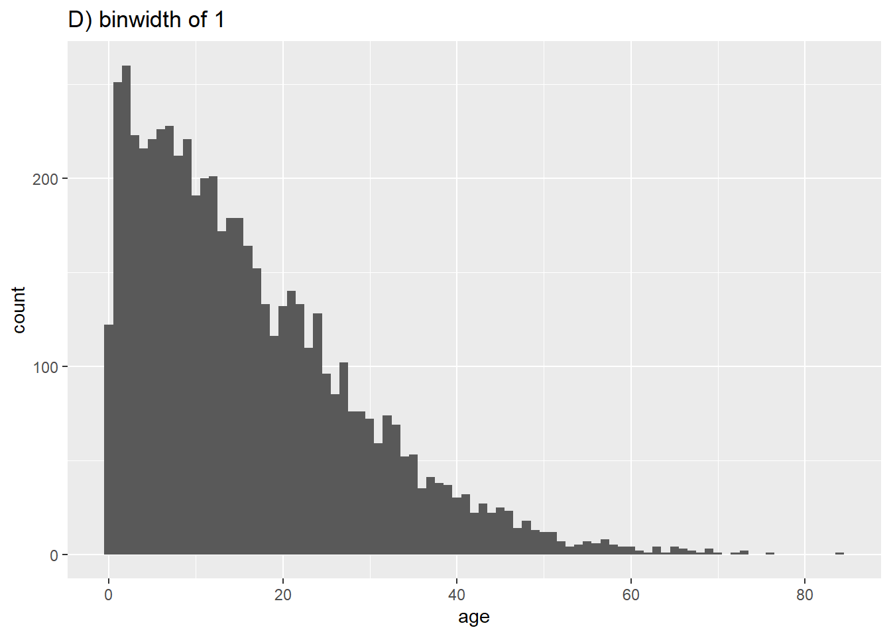
Pour obtenir des proportions lissées, on peut utiliser geom_density() :
# Fréquence avec axe de proportion, lissée
ggplot(data = linelist, mapping = aes(x = age)) +
geom_density(size = 2, alpha = 0.2)+
labs(title = "Proportional density")
# Fréquence empilée avec axe de proportion, lissée
ggplot(data = linelist, mapping = aes(x = age, fill = gender)) +
geom_density(size = 2, alpha = 0.2, position = "stack")+
labs(title = "'Stacked' proportional densities")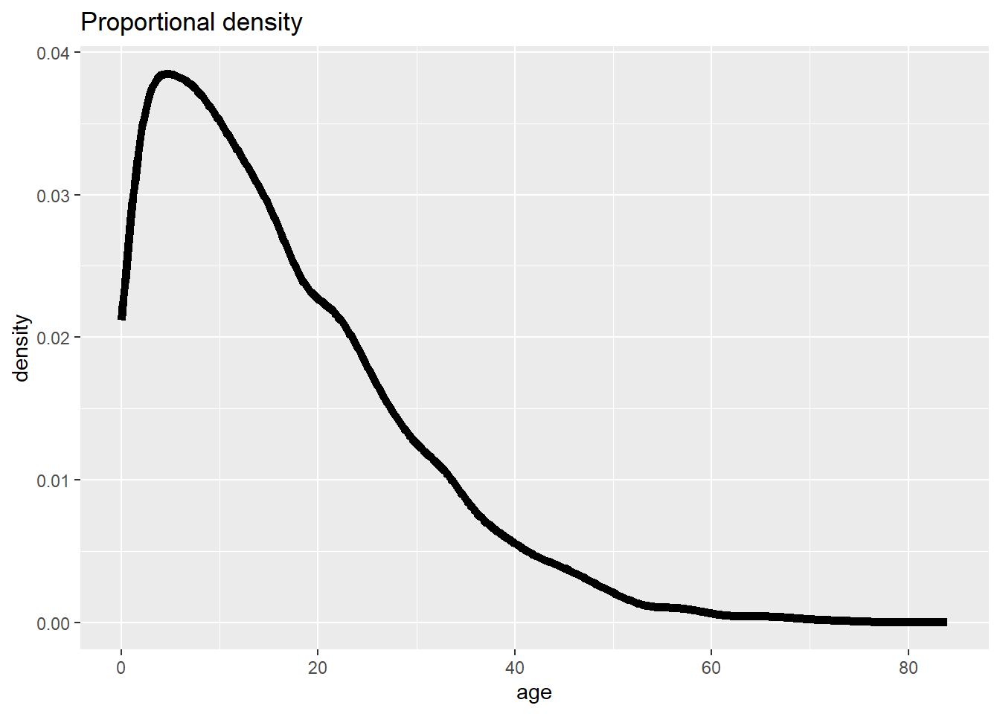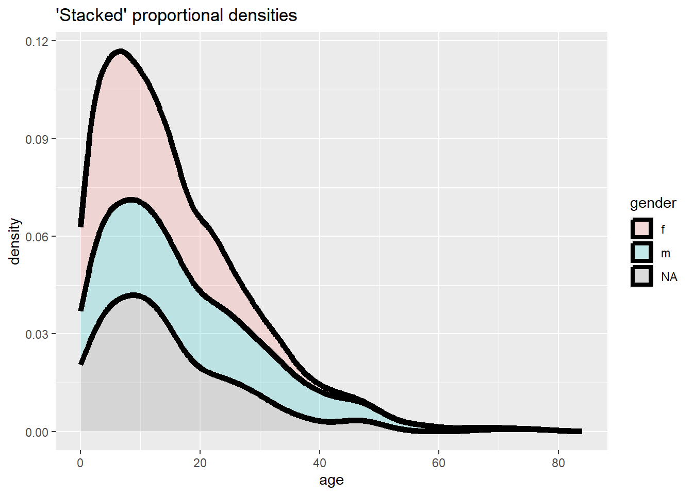
Pour obtenir un histogramme “empilé” (d’une colonne continue de données), nous pouvons faire l’une des choses suivantes :
- Utilisez
geom_histogram()avec l’argumentfill =dansaes()et affecté à la colonne de regroupement, ou
- Utilisez
geom_freqpoly(), qui est probablement plus facile à lire (vous pouvez toujours définirbinwidth =).
- Pour voir les proportions de toutes les valeurs, définissez le paramètre
y = after_stat(density)(utilisez exactement cette syntaxe non modifiée pour vos données). Note : ces proportions seront affichées par groupe.
Chacun d’entre eux est présenté ci-dessous (notez l’utilisation de color = ou fill = dans chacun d’entre eux) :
# Histogramme "empilé"
ggplot(data = linelist, mapping = aes(x = age, fill = gender)) +
geom_histogram(binwidth = 2)+
labs(title = "'Stacked' histogram")
# Frequence
ggplot(data = linelist, mapping = aes(x = age, color = gender)) +
geom_freqpoly(binwidth = 2, size = 2)+
labs(title = "Freqpoly")
# Frequence avec axe en proportion
ggplot(data = linelist, mapping = aes(x = age, y = after_stat(density), color = gender)) +
geom_freqpoly(binwidth = 5, size = 2)+
labs(title = "Proportional freqpoly")
# Frequence avec axe en proportion, lissé
ggplot(data = linelist, mapping = aes(x = age, y = after_stat(density), fill = gender)) +
geom_density(size = 2, alpha = 0.2)+
labs(title = "Proportional, smoothed with geom_density()")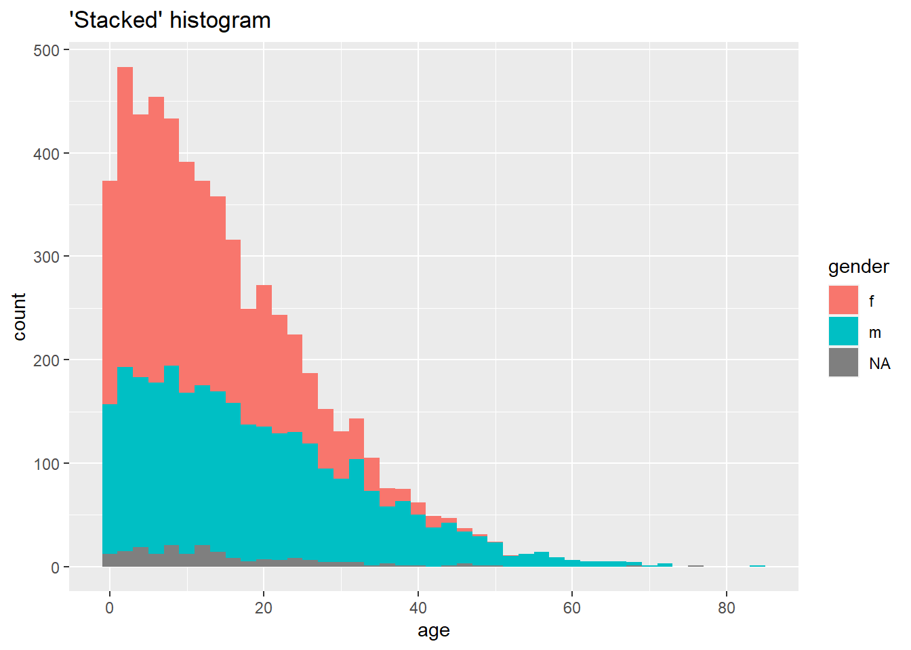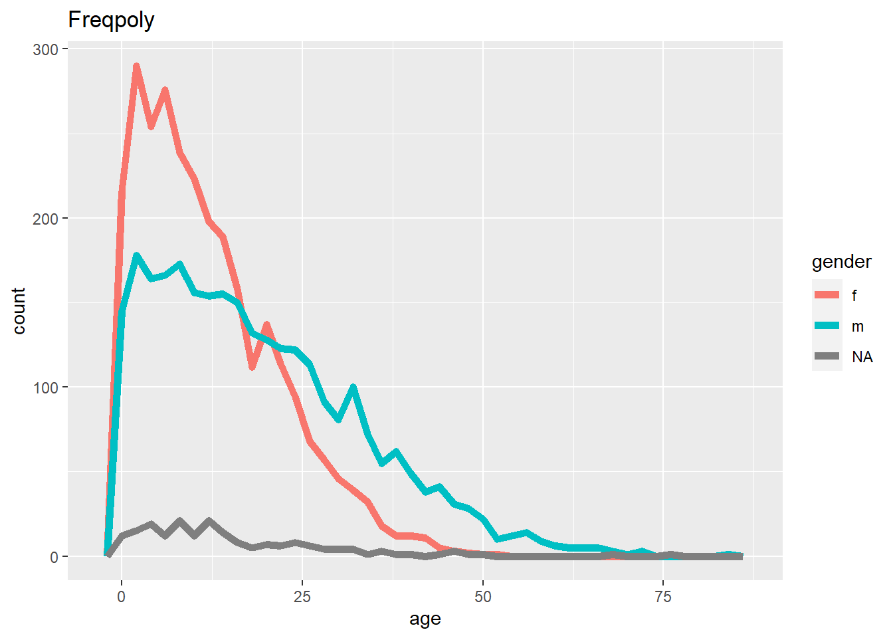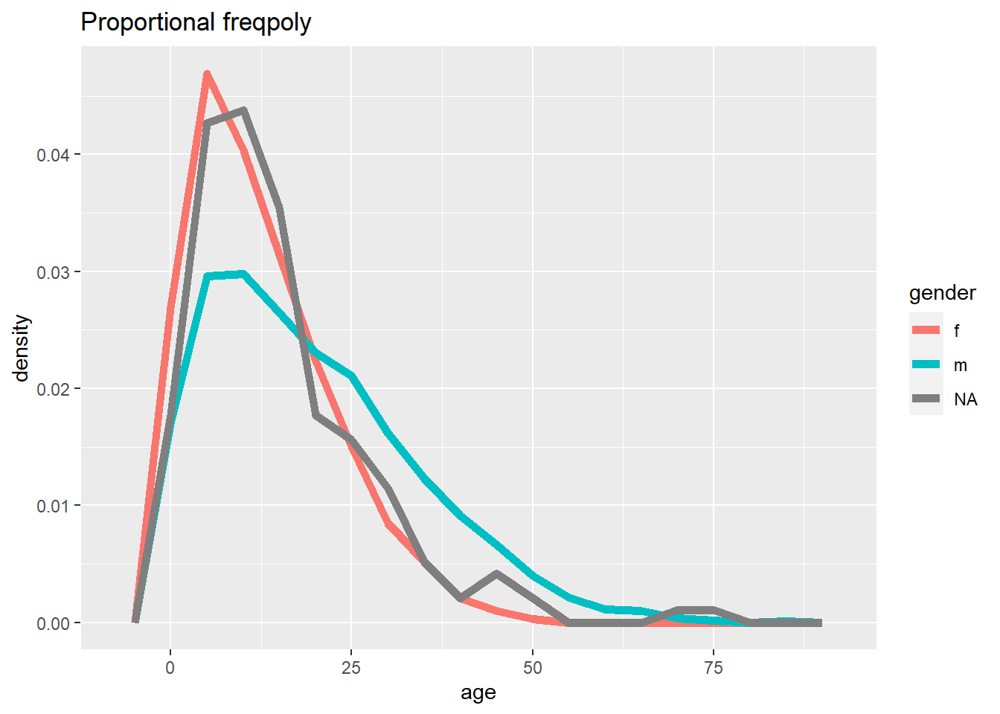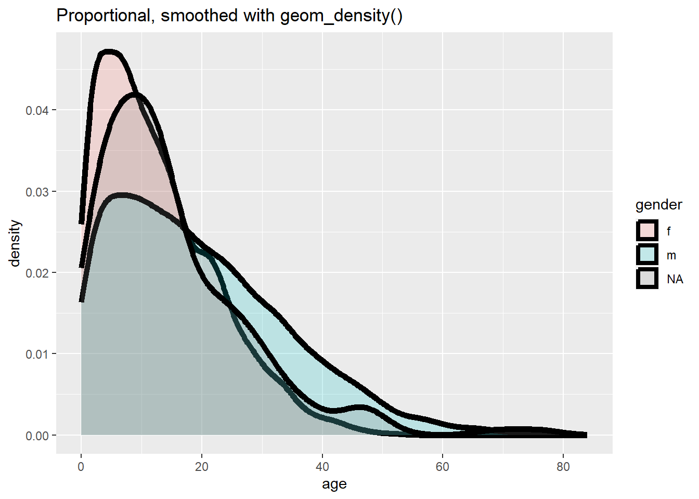
Si vous voulez vous amuser un peu, essayez geom_density_ridges du “package” ggridges (vignette ici.
Pour plus de détails sur les histogrammes, consultez la page tidyverse page sur geom_histogram().
Diagrammes en boîtes
Les diagrammes en boîte sont très utilisés, mais ils ont des limites importantes. Ils peuvent masquer la distribution réelle - par exemple, une distribution bimodale. Voir cette galerie de graphiques R et cet article data-to-viz pour plus de détails. Cependant, ils affichent joliment l’écart interquartile et les valeurs aberrantes - ils peuvent donc être superposés à d’autres types de graphiques qui montrent la distribution de manière plus détaillée.
Nous vous rappelons ci-dessous les différentes composantes d’un diagramme en boîte :

Lorsque vous utilisez geom_boxplot() pour créer un box plot, vous mappez généralement un seul axe (x ou y) dans aes(). L’axe spécifié détermine si les tracés sont horizontaux ou verticaux.
Dans la plupart des “geoms”, nous créons un graphique par groupe en faisant correspondre un attribut comme color = ou fill = à une variable dans aes(). Cependant, pour les diagrammes en boîte, nous pouvons le faire en assignant la variable de regroupement à l’axe non assigné (x ou y). Ci-dessous se trouve le code pour un diagramme de boîte de toutes les valeurs d’âge dans l’ensemble de données, et ensuite le code pour afficher un box plot pour chaque sexe (non manquant) dans l’ensemble du jeu de données. Notez que les valeurs NA (manquantes) apparaîtront comme un diagramme de boîte séparé, sauf si elles sont supprimées. Dans cet exemple, nous avons également défini le “remplissage” de la colonne “gender” (issue finale de chaque cas) afin que chaque diagramme de boîtes soit d’une couleur différente - mais ce n’est pas nécessaire.
# A) Diagramme de boîte d'ensemble
ggplot(data = linelist)+
geom_boxplot(mapping = aes(y = age))+ # uniquement axe y mappé (non axe des x)
labs(title = "A) Overall boxplot")
# B) Diagramme de boîte par groupe
ggplot(data = linelist, mapping = aes(y = age, x = gender, fill = gender)) +
geom_boxplot()+
theme(legend.position = "none")+ # supprimer la légende (redondant)
labs(title = "B) Boxplot by gender") 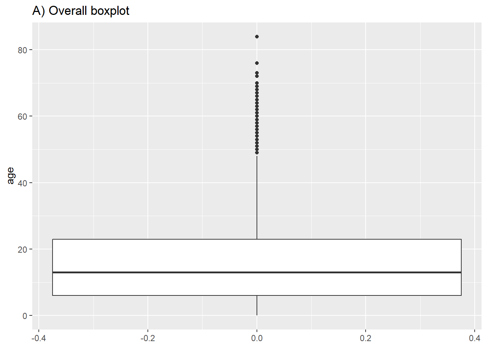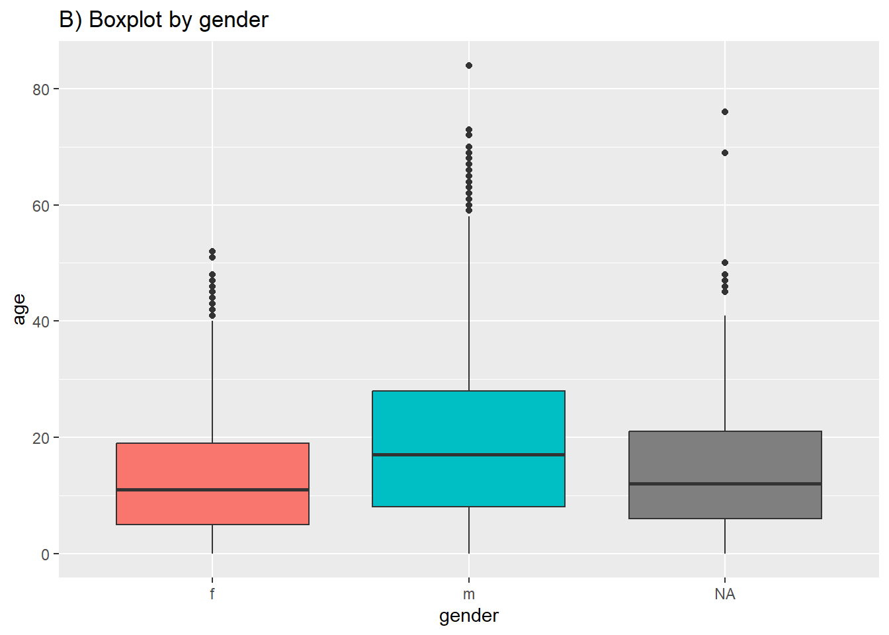
Pour le code permettant d’ajouter un diagramme en boîte aux bords d’un nuage de points (diagrammes “marginaux”), voir la page Trucs et Astuces avec ggplot.
Graphes en violon, gigue, et “sina”
Ci-dessous, vous trouverez le code pour créer des diagrammes en violon (geom_violin) et jitter (gigue) (geom_jitter) pour montrer les distributions. Vous pouvez spécifier que le remplissage ou la couleur est également déterminé par les données, en insérant ces options dans aes().
# A) Jitter par groupe
ggplot(data = linelist %>% drop_na(outcome), # supprimer les valeurs manquantes
mapping = aes(y = age, # mapper la variable continue
x = outcome, # mapper la variable de regroupement
color = outcome))+ # mapper la couleur avec la variable outcome
geom_jitter()+ # Creer le graphique
labs(title = "A) jitter plot by gender")
# B) Violin par groupe
ggplot(data = linelist %>% drop_na(outcome), # supprimer les valeurs manquantes
mapping = aes(y = age, # mapper la variable continue
x = outcome, # mapper la variable de regroupement
fill = outcome))+ # mapper la ouleur avec la variable outcome
geom_violin()+ # Creer le graphique
labs(title = "B) violin plot by gender") 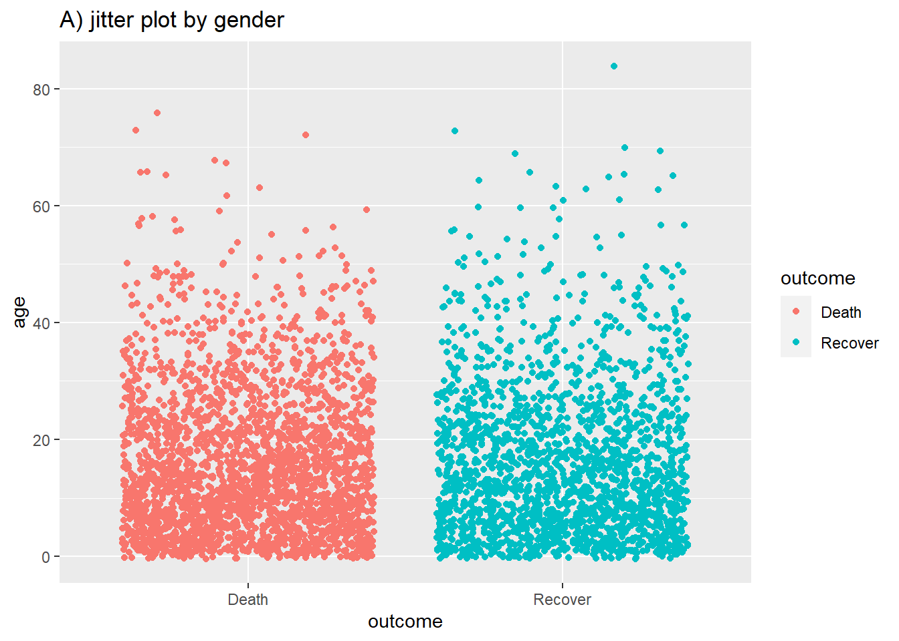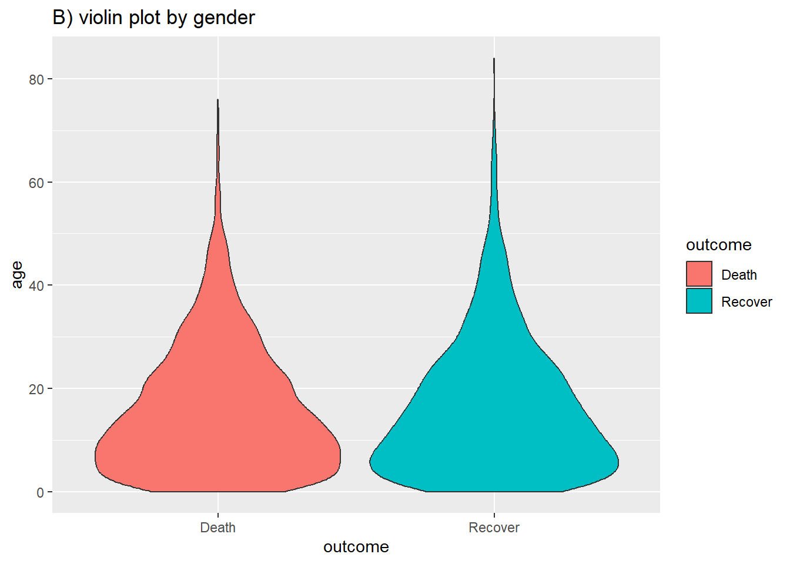
Vous pouvez combiner les deux en utilisant la fonction geom_sina() du “package” ggforce. La fonction trace les points de gigue dans la forme du tracé de violon. Lorsqu’il est superposé au tracé du violon (en ajustant les transparences), il peut être plus facile à interpréter visuellement.
# A) Sina par group
ggplot(
data = linelist %>% drop_na(outcome),
aes(y = age, # mapper la variable numérique
x = outcome)) + # mapper la variable de regroupement
geom_violin(
aes(fill = outcome), # remplissage (couleur de fond du violon)
color = "white", # contour blanc
alpha = 0.2)+ # transparence
geom_sina(
size=1, # Changer la taille des gigues
aes(color = outcome))+ # mapper la couleur des points avec la variable outcome
scale_fill_manual( # Definir des couleurs de remplissage (de fond) des violons en precisant quelle couleur prend chaque modalite de la variable outcome
values = c("Death" = "#bf5300",
"Recover" = "#11118c")) +
scale_color_manual( # Definir des couleurs des points en precisant quelle couleur prend chaque modalite de la variable outcome
values = c("Death" = "#bf5300",
"Recover" = "#11118c")) +
theme_minimal() + # Supprimer l'arriere-plan gris
theme(legend.position = "none") + # Supprimer la legende non-necessaire
labs(title = "B) violin and sina plot by gender, with extra formatting") 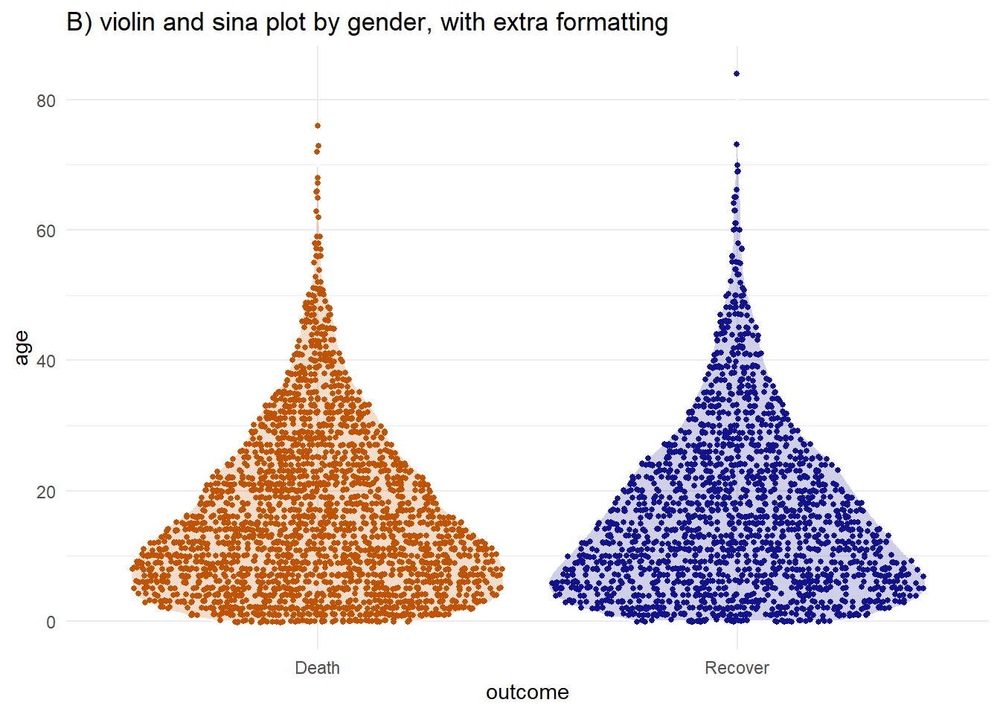
Deux variables continues
En suivant une syntaxe similaire, geom_point() vous permettra de tracer deux variables continues l’une en fonction de l’autre dans un scatter plot (un nuage de points/un diagramme de dispersion). Ceci est utile pour montrer les valeurs réelles plutôt que leurs distributions. Un diagramme de dispersion basique de l’âge par rapport au poids est montré dans (A). Dans (B), nous utilisons à nouveau facet_grid() pour montrer la relation entre deux variables continues dans la liste lineaire.
# Diagramme de dispersion du poids et de l'âge
ggplot(data = linelist,
mapping = aes(y = wt_kg, x = age))+
geom_point() +
labs(title = "A) Scatter plot of weight and age")
# Diagramme de dispersion du poids et de l'âge par sexe et issue finale du cas
ggplot(data = linelist %>% drop_na(gender, outcome), #garder que le sexe/issue finale non manquant
mapping = aes(y = wt_kg, x = age))+
geom_point() +
labs(title = "B) Scatter plot of weight and age faceted by gender and outcome")+
facet_grid(gender ~ outcome) 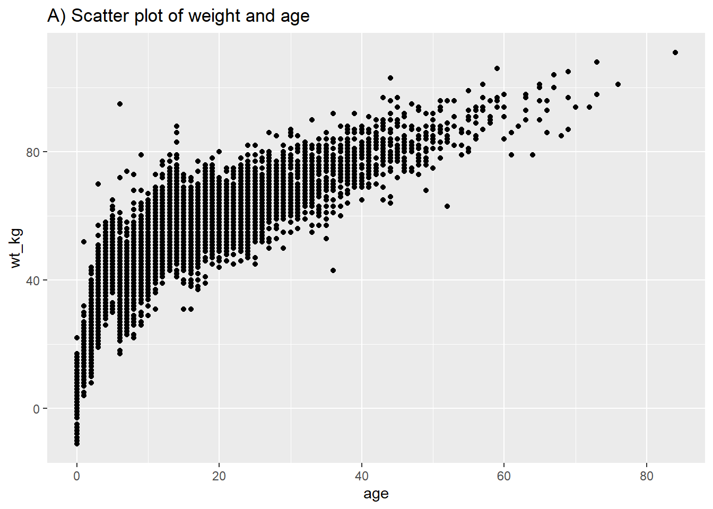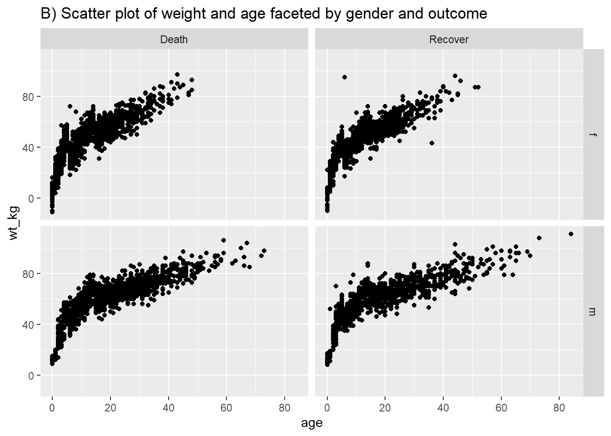
Trois variables continues
Vous pouvez afficher trois variables continues en utilisant l’argument fill = pour créer un graphique thermique (heat plot). La couleur de chaque “cellule” reflétera la valeur de la troisième colonne de données continues. Voir la page Astuces en ggplot et la page sur les Graphiques thermiques pour plus de détails et plusieurs exemples.
Il existe des moyens de créer des graphiques 3D dans R, mais pour l’épidémiologie appliquée, ils sont souvent difficiles à interpréter et donc moins utiles pour la prise de décision.
29.13 Représenter des données catégorielles
Les données catégoriques peuvent être des valeurs de caractères, des valeurs logiques (VRAI/FAUX) ou des facteurs (voir la page Facteurs).
Préparation
Structure des données
La première chose à comprendre au sujet de vos données catégorielles est de savoir si elles existent sous forme d’observations brutes, comme une liste linéaire de cas, ou sous forme de résumé ou de tableau de données agrégées contenant des comptages ou des proportions. L’état de vos données aura un impact sur la fonction de traçage que vous utiliserez :
- Si vos données sont des observations brutes avec une ligne par observation, vous utiliserez probablement
geom_bar().
- Si vos données sont déjà agrégées en nombres ou en proportions, vous utiliserez probablement
geom_col().
Classe des variables et ordre des valeurs
Ensuite, examinez la classe des colonnes que vous voulez tracer. Nous examinons hospital, d’abord avec class() de base R, et avec tabyl() de janitor.
# Voir la classe de la variable hospital - on peut voir que c'est une variable de type caractère
class(linelist$hospital)## [1] "character"# Regardez les valeurs et les proportions dans la variable hospital
linelist %>%
tabyl(hospital)## hospital n percent
## Central Hospital 454 0.07710598
## Military Hospital 896 0.15217391
## Missing 1469 0.24949049
## Other 885 0.15030571
## Port Hospital 1762 0.29925272
## St. Mark's Maternity Hospital (SMMH) 422 0.07167120Nous pouvons voir que les valeurs à l’intérieur sont des caractères, car il s’agit de noms d’hôpitaux, et par défaut elles sont classées par ordre alphabétique. Il existe des valeurs “autres” et “manquantes”, que nous préférerions voir figurer dans les dernières sous-catégories lors de la présentation des répartitions. Nous transformons donc cette variable en facteur et la réorganisons. Ce point est traité plus en détail dans la page Facteurs.
# Convertir en facteur et définir l'ordre des niveaux pour que "Other" et "Missing" soient les derniers.
linelist <- linelist %>%
mutate(
hospital = fct_relevel(hospital,
"St. Mark's Maternity Hospital (SMMH)",
"Port Hospital",
"Central Hospital",
"Military Hospital",
"Other",
"Missing"))levels(linelist$hospital)## [1] "St. Mark's Maternity Hospital (SMMH)" "Port Hospital" "Central Hospital"
## [4] "Military Hospital" "Other" "Missing"geom_bar()
Utilisez geom_bar() si vous voulez que la hauteur des barres (ou la hauteur des composants des barres empilées) reflète le nombre de lignes pertinentes dans les données. Ces barres auront des espaces entre elles, à moins que l’attribut graphique width = soit ajusté.
- Ne fournissez qu’une seule affectation de colonne d’axe (généralement l’axe des x). Si vous fournissez x et y, vous obtiendrez
Error: stat_count() can only have an x or y aesthetic.
- Vous pouvez créer des barres empilées en ajoutant une affectation de colonne
fill =dansmapping = aes().
- L’axe opposé sera intitulé “count” par défaut, car il représente le nombre de lignes.
Ci-dessous, nous avons affecté la variable “outcome” (issue finale) à l’axe des y, mais il pourrait tout aussi bien être sur l’axe des x. Si vous avez des valeurs de caractères plus longues, il est parfois préférable de retourner les barres sur le côté et de placer la légende en bas. Cela peut avoir un impact sur la façon dont vos niveaux de facteurs sont ordonnés - dans ce cas, nous les inversons avec fct_rev() pour mettre les manquants et les autres en bas.
# A) Issues finales pour l'ensemble des cas
ggplot(linelist %>% drop_na(outcome)) +
geom_bar(aes(y = fct_rev(hospital)), width = 0.7) +
theme_minimal()+
labs(title = "A) Number of cases by hospital",
y = "Hospital")
# B) Issues finales pour les cas par hôpital
ggplot(linelist %>% drop_na(outcome)) +
geom_bar(aes(y = fct_rev(hospital), fill = outcome), width = 0.7) +
theme_minimal()+
theme(legend.position = "bottom") +
labs(title = "B) Number of recovered and dead Ebola cases, by hospital",
y = "Hospital")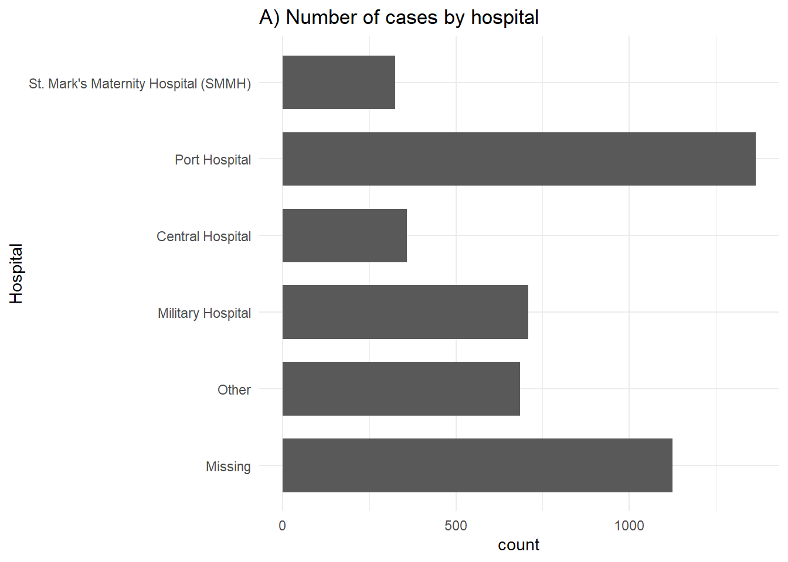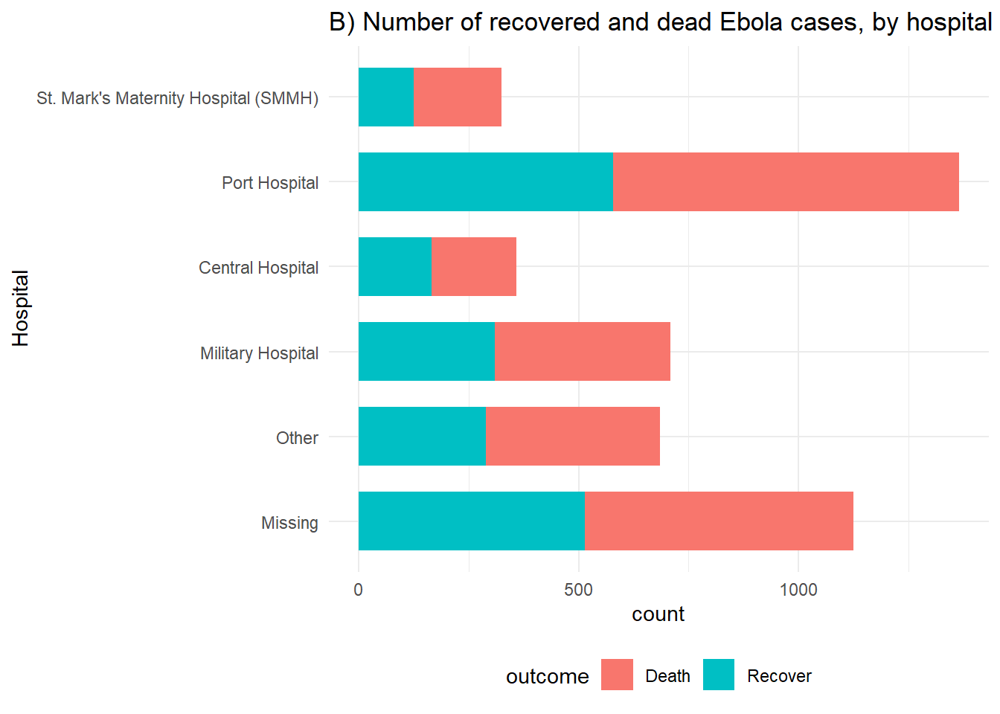
geom_col()
Utilisez geom_col() si vous voulez que la hauteur des barres (ou la hauteur des composants des barres empilées) reflète des valeurs pré-calculées qui existent dans les données. Il s’agit souvent de chiffres ou de proportions résumés ou “agrégés”.
Fournissez des affectations de variables pour les deux axes à geom_col(). Généralement, la colonne de l’axe des x est discrète et celle de l’axe des y est numérique.
Disons que nous avons cet ensemble de données outcomes :
## # A tibble: 2 × 3
## outcome n proportion
## <chr> <int> <dbl>
## 1 Death 1022 56.2
## 2 Recover 796 43.8Le code ci-dessous utilise geom_col pour créer des diagrammes en barres simples afin de montrer la distribution de l’issue finale des cas Ebola. Avec geom_col, x et y doivent être spécifiés. Ici, x est la variable catégorielle sur l’axe des x, et y est la colonne de proportions générée proportion.
# Issues finales pour l'ensemble des cas
ggplot(outcomes) +
geom_col(aes(x=outcome, y = proportion)) +
labs(subtitle = "Number of recovered and dead Ebola cases")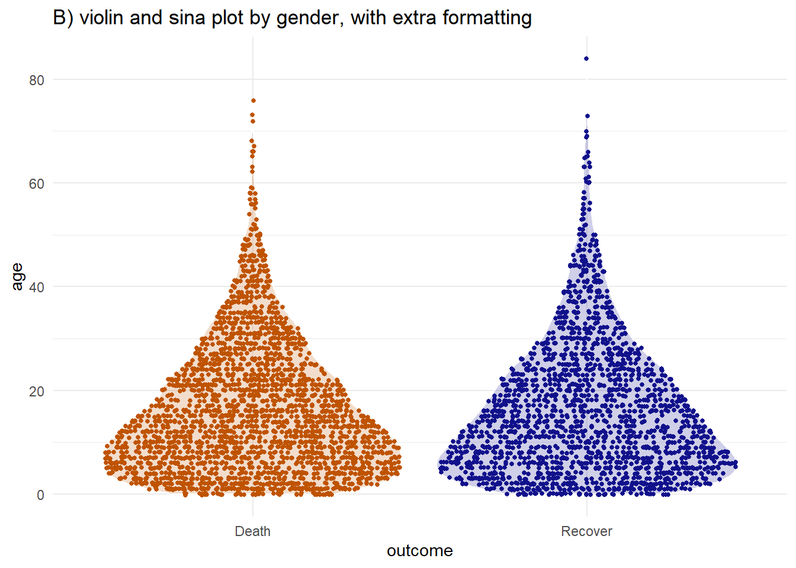
Pour montrer les répartitions par hôpital, il faudrait que notre tableau contienne plus d’informations et qu’il soit au format “long”. Nous créons ce tableau avec les fréquences des catégories combinées outcome et hospital (voir la page Travailler sur des données groupées pour des conseils sur le regroupement).
outcomes2 <- linelist %>%
drop_na(outcome) %>%
count(hospital, outcome) %>% # compter les lignes par hôpital et issue finale
group_by(hospital) %>% # regrouper pour que les proportions soient sur le total de "hospital"
mutate(proportion = n/sum(n)*100) # calculer les proportions de décès et de guerison au sein de chaque "hospital"
head(outcomes2) # Voir les premières lignes de la table ## # A tibble: 6 × 4
## # Groups: hospital [3]
## hospital outcome n proportion
## <fct> <chr> <int> <dbl>
## 1 St. Mark's Maternity Hospital (SMMH) Death 199 61.2
## 2 St. Mark's Maternity Hospital (SMMH) Recover 126 38.8
## 3 Port Hospital Death 785 57.6
## 4 Port Hospital Recover 579 42.4
## 5 Central Hospital Death 193 53.9
## 6 Central Hospital Recover 165 46.1Nous créons ensuite le ggplot avec quelques mises en forme supplémentaires :
- Inverser les axes : Nous avons inversé les axes avec
coord_flip()pour pouvoir lire les noms des hôpitaux. Barres côte-à-côte : Nous avons ajouté d’un argumentposition = "dodge"pour que les barres pour les décès et la guérison soient présentées côte à côte plutôt qu’empilées. Notez que les barres empilées sont la valeur par défaut. - Largeur de colonne : Nous avons spécifié ‘width’, donc les colonnes sont deux fois moins larges que la largeur maximale possible.
Ordre des variable : Nous avons inversé l’ordre des catégories sur l’axe des y de sorte que ‘Autre’ et ‘Manquant’ soient en bas, avec
scale_x_discrete(limits=rev). Notez que nous avons utilisé cette méthode plutôt quescale_y_discreteparce que l’hôpital est indiqué dans l’argumentxdeaes(), même si visuellement il est sur l’axe des ordonnées. Nous faisons cela parce que ggplot semble présenter les catégories à l’envers, sauf si nous lui disons de ne pas le faire.
- Autres détails : Les étiquettes/titres et couleurs ont été ajoutés dans
labsetscale_fill_colorrespectivement.
# Issue finale pour l'ensemble des cas par hopital
ggplot(outcomes2) +
geom_col(
mapping = aes(
x = proportion, # mapper axe des x avec les proportions pre-calculées
y = fct_rev(hospital), # inverser les catégories de la variable 'hospital' pour que missing/other sont en dernier
fill = outcome), # remplissage par issue finale
width = 0.5)+ # barres moins larges (sur 1)
theme_minimal() + # theme minimal
theme(legend.position = "bottom")+
labs(subtitle = "Number of recovered and dead Ebola cases, by hospital",
fill = "Outcome", # titre légende
y = "Count", # titre axe des y
x = "Hospital of admission")+ # titre axe des x
scale_fill_manual( # préciser des couleurs manuellement
values = c("Death"= "#3B1c8C",
"Recover" = "#21908D" )) 
Notez que les proportions sont binaires, et que l’on peut donc préférer ne pas utiliser le terme “guérison” et ne montrer que la proportion de décès. Ceci n’est qu’une illustration.
Si vous utilisez geom_col() avec des données de dates (par exemple une courbe épidémique à partir de données regroupées) - vous voudrez ajuster l’argument width = pour supprimer les lignes de “gap” entre les barres. Si vous utilisez des données quotidiennes, réglez width = 1. Si vous utilisez des données hebdomadaires, width = 7.
CAUTION: Les mois ne sont pas possibles car chaque mois a un nombre de jours différent..
geom_histogram()
Les histogrammes peuvent ressembler à des diagrammes en barres, mais ils sont distincts car ils mesurent la distribution d’une variable continue. Il n’y a pas d’espace entre les “barres”, et une seule colonne est fournie à geom_histogram(). Il existe des arguments spécifiques aux histogrammes tels que bin_width = et breaks = pour spécifier comment les données doivent être classées. La section ci-dessus sur les données continues et la page sur les Courbes épidémiques fournissent des détails supplémentaires.
29.14 Ressources
Il existe une grande quantité de ressources et d’aide en ligne, en particulier avec ggplot. Voir :
- Antisèche ggplot2
- Un autre antisèche
- Page tidyverse sur les bases de ggplot
- Representation des variables continues
- Page R for Data Science sur la visualisation des donnees
- Page R for Data Science sur les graphiques pour mieux communiquer